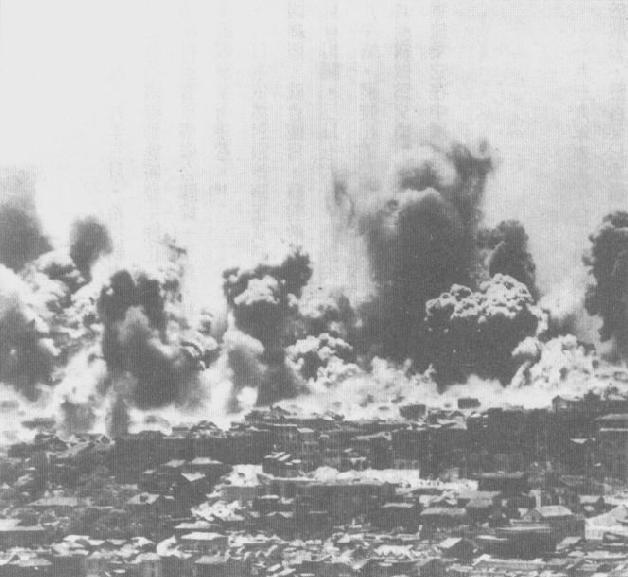

|
前一页 后一页 回目录 回主页 |
第四章：长期战争开始 回到南京后，尽管在西安饱经羞辱与愤慨，蒋介石的决定却是经过盘算，果决又大胆。最重要的是，这些反映出他一心希望着手统一中国、准备对日作战的重要任务。毛泽东的好友兼传记作者史诺（Edgar Snow）写说：“蒋个人所遭受的惊骇震撼，或许会令一个较乏远见的人动怒、乱了方寸，驱使他匆匆采取报复行动——事实上，蒋在南京的追随者就是如此怒气冲冲要求报复。”但是，蒋却是“妥协大师”①。首先，实际上不动兵戎，委员长就成功控制了陕西两个兵变阵营，部署五个军向西安进军，又更换东北军的师长，并且重新调遣所有东北军到江苏和安徽。效忠者很快镇服由少数亲共军官发动的兵变，极大多数的东北军官兵，几周前似乎还桀傲不驯，现在却俯首听命。 ① Edgar Snow, Red Star over China (1938; New York: Random House Modern Library, 1944), pp.465,471. 一行人回到南京，军情人员扣留少帅张学良，但蒋夫人出面求情，蒋后来颁令宽赦，把他“监管”起来①。这等于是无限期软禁——果真就是长达50年沉闷（但还算怯意）的居家监禁。张学良以打麻将、读史书和收集艺术品排遣时间，有一阵子由元配夫人和宠爱的红粉知己赵一荻轮流陪侍。他第一个软禁处所是奉化溪口镇蒋家村山区。蒋夫人表示愿代管他的艺品珍藏，也定期写信、送特产食品和其他小礼物给他②。相反地，被委员长误认是主谋者的杨虎城，却以“军事专员”身分送到欧美考察一年。杨虎城1938年回国，旋即被委员长下令逮捕③。 ① T.V.Soong Papers, box 60, folder 3. ② 张学良侄女张闾芝视讯访谈，2003年5月30日。 ③ Boorman, Biographical Dictionary, vol.4, p.7; Michael Gibson, "Chiang Kaishek's Central Army, 1924-1938," Ph.D.diss, George Washington University, 1985, p.336. 周恩来从西安回报时，毛泽东简直不敢相信，蒋只是出言保证说会停止内战。他担心几天前似乎落入掌中的这位大敌，现在已不受控要大举“迅速、残酷地报复”。不过，周恩来说，蒋“可能不会食言”。他以调侃的口吻说：蒋自命为英雄人物，会有言出必行的虚荣心。毛泽东想起自己从前也是这样讽刺蒋的天真，也就认同了这个判断①。他说，蒋可能又扮演起阿Q的角色——作家鲁迅笔下那个中国自我幻想、蒙昧无知的代表人物。毛认为，蒋就像阿Q一样，对自己的美德和真诚以及中国的传统，充满幻想，中共正好可以好好利用他这一点天真。拿定了主意之后，毛泽东就接受张国焘的建议，共产党表面上对委员长毕恭毕敬，但内心里要如西元前500年的越王勾践一样卧薪尝胆，静待时机，完成大业②。 ① Zhang Guotao（张国焘），The Rise of the Chinese Communist Party (Lawrence: University Press of Kansas, 1971), vol.2, p.497. ② 同上注，p.518。 蒋介石的确没有公开承诺任何条件，在调走原先兵谏的部队之后，大可迅速调集大军包围延安基地。中共在陕北的三个红军兵力只有5万人左右；其中只有29650人有枪，而且他们没有空军①。同时，蒋氏统领大军202.9万人，其中30万人受德式训练，有8万人更是配备德制武器。此外，他拥有“314架军机，600多名战斗机飞行员”。再者，史诺说“他安全脱险后全民拥护的声势极大”，证实他在国人心目中的地位如日中天，“远胜于中国现代史上任何一位领袖”②。以民意而言，这是发动攻击的最佳时刻。 ① Two Ping, "The Deployment of the Eighth Route Army and the New Fourth Army to the Front and Northern China and Their Strategic Expansion in the War of Resistance against Japan," paper given at the Harvard University Conference on Wartime China, Maui, January 2004. ② Snow, Red Star, p.471. 但是，蒋介石恢复自由身之后，根本没想到要动武。果如周恩来预见，他信守承诺、停止“剿匪”，还开始每月拨款20、30万元给中共部队①。共产国际也继续它的资金提供，于1937年初给了中共80万美元，另外还有等额的钱以备“额外采购”之需②。同时，毛泽东告诉同僚，执行统一战线的时候，中共要利用各种藉口防止国民党整编或打散红军。抗日战争一爆发，毛就预测：“一切都会顺利解决。”③ ① 蒋1927年1月31日给顾祝同的电报指示，收在秦孝仪，《大事长编》卷四，p.1061。 ② RGASPI, collection 495, inventory 74, file 281, sheet 28. ③ Zhang Guotao（张国焘），The Rise of the Chinese Communist Party, pp.517-520. 2月间，国民党中央执行委员会拒绝为统一战线背书，重申必须反共到底。不少中央委员依然相信和日本合作、而非和共产党合作，才是恢复中国主权的道路。但是蒋介石执意要做，下令对西北赤区开放贸易、部分恢复邮电服务。同时，中共因莫斯科和南京的钱源源而来，买了一队美制卡车，开通西安至延安的巴士服务①。访问延安的中国记者纷纷报导，中共已铲除贪污和压榨，数百、数千青年响应“到延安去”。 ① Snow, Red Star, p.474. 但是，和蒋的协议也在中共和红军基层制造出极大的混乱。为了澄清，中共向全体党员发布秘密公告，宣称搞统一战线只是策略，使党既能抗日又可“千百倍”扩张势力。蒋也看到这份公告，认为这显示共产党的奸诈，但是他并未公开宣扬这个观点，继续把中共当做忠心的小老弟看待①。他也放弃削弱军阀的努力，现在全神贯注准备抗日。他需要全国团结以及苏联的军援。 ① Chiang Diaries, Hoover, February 18, 1937, box 39, folder 8. 蒋介石认为，如果一年内他可以领导抗日成功——他相信至少这是可能的剧本——事后总有办法处理共产党的威胁。蒋氏突然很正面、甚至高度评估对日作战的胜算，有一大部分是反映他的德籍顾问法肯豪森将军突然变得乐观；这位德国将军前几个月还说中国军队需要两年时间才能跟日本开战。现在他却告诉蒋，国军已够强大，可“把日本人赶出长城”，因此力促委员长，要防守沿海地区和长江流域，不要计划早早退守四川①。1937年3月，他建议蒋派遣中央军部队进驻北平、天津地区，此一行动势必会引爆全面战争②。蒋氏很早就了解日本皇军所拥有的陆海空现代军力——此一力量可与欧洲的兵力互较高下——现在，他觉得已可和日本大敌放手一搏。 ① Akira Iriye（入江昭），The Origins of the Second World War in Asia and the Pacific (New York: Longman, 1987), pp.43-44; Donald S.Sutton, "German Advice and Residual War Lordism in the Nanking Decade: Influences on Nationalist Military Training and Strategy," China Quarterly 9, no.91 (1982): 401. ② 同上注，pp.386-410。 蒋也可能因为目睹新练精锐部队演习操练景象壮观而信心倍增，加上他觉得民气可用——民意不仅支持他本人和统一战线，也支持政府终于明显有了抗日的计划。此外，他可能也说服自己相信，国共停止内战已使中国有了抗日必须的团结和精神力量——不论是打一场有限战争，或是旷日持久的长期抗战，都没问题。不论出于什么原因，他和法肯豪森对当时中国军事力量的评估，有过度高估的情况。 6月间，蒋派出一支半官方的国民党代表团到中共边区考察，发表抗日演讲。蓝衣社也奉命集中力量惩罚亲日“汉奸”。共产党控制地区变成“特区政府”，名义上受南京中央管辖。中共开会时，蒋介石的照片也和马克思、列宁、斯大林、毛泽东的照片并列。即使一般中共党员也晓得这只是做做表面文章。中共为示“守信”，停止新的没收土地做法，但早先占走的土地则不予归还；停止反国民党的宣传；拥护孙中山的三民主义。史诺观察到，这些改变“并未影响中共的基本理论、方案或自主地位”①。蒋氏对这一切全都心里有数。 ① Snow, Red Star, pp.473-475. 1937年4月19日，蒋经国带着俄国妻子方良、16个月大的儿子孝文，回到上海。几个星期后，蒋经国踏进杭州一处招待所，恭迎父亲并跪地磕头。委员长指示儿子花几个月时间重拾中文作文、温习古籍和国父遗教。然后，他带蒋经国进入书房，拜见继母宋美龄①。每个人都正经八百、客气相待，完全不提父子多年来的不合；蒋也建议儿子把他在苏联滞留近13年的经验写下来。 ① 1995年9月27日，一群奉化亲友及研究人员集体接受访问。 虽然蒋仍苦于西安事变所受的伤，他的政治地位却日益坚固。詹森大使向国务院报告说：中国人“不问其个人或政治倾向如何”，普遍认为蒋氏继续在位，“是救国大业最需”①。蒋本人尽管身体不适，却觉得“数日来，精神与身体皆觉较前舒适”②。 ① FRUS(1937), vol.3: The Far East, p.87. ② Chiang Diaries, Hoover, June 10, 1937, box 39, folder 12. 7月7日炎热的夜晚，明月当空。日本华北驻军（兵力仅约5000到7000人）约135人在距北平10英里的800年古桥卢沟桥附近演习。当晚十点半左右，中国二十九路军士兵对朝向卢沟桥逼近的日本武装队伍开火。日军反击。双方军营联络官通电话后，互相道歉，但是日本旅团长不想示弱，下令炮击中国部队，中方也立刻回敬颜色①。 ① Kimitrada I.Miwa, "Brief Notes on the Chinese Communists' Role in the Spread of the Marco Polo Bridge Incident into Full-Scale War," paper pressented at the Harvard University Conference on Wartime China, Maui, January 2004, pp.318-320. 蒋氏正在庐山主持军事会议，半夜接到电讯报告此一事件。他不敢确定究竟这是又一次的意外开火，还是有如9·18事件，是日军藉机挑衅。他指示二十九路军军长谈判，但“应固守勿退”①。 然后，他拍发电报给各省主席、各直辖市市长，以及驻军司令长官，下令实施戒严以及“全面动员准备”。最重要的是，他从最精锐的德式训练部队，派遣三个师跨过黄河部署到华北地区。这可是塘沽协定对中央军下的“禁区”，蒋晓得日本人不甘示弱，必定会有反弹。 ① 秦孝仪，《大事长编》卷四，pp.1114-1115；《蒋总统秘录》，（台北：中央日报，1978），第十一册，p.12。 卢沟桥开了第一枪之后不到数小时，毛泽东和朱德通电蒋委员长和共军所有单位，宣布红军将完全听命委员长领导，接受指挥。7月9日一大早，卢沟桥地区中、日双方指挥官协议停火，相互撤退。日本陆军最高本部训令驻华派遣军司令不要诉诸武力。可是，国内出现异声，要求非得教训狂傲的中国人不可。新任首相近卫亲王派三个师团驰赴事件地区①。 ① 秦孝仪，《大事长编》卷四，p.1119；Miwa, "Brief Notes," p.321. 日军7月12日抵达天津时，蒋拍电报给国军二十九路军，声明：“非至万不得已，不宜宣战。”①他立刻呼吁国际联盟及九国公约的西方签署国家介入调停，但是蒋无疑料想得到美、英、法、意只会怯生生促请日本节制。为避免激恼日本，美国国务卿赫尔（Cordell Hull）甚至停止交运中国政府已购买的轰炸机。美国传教士推动禁运战略物资给日本，但国会拒绝采取行动②。 ① Chiang Diaries, Hoover, July 12, 1937, box 39, folder 13; Ma Chendu（马振犊），"Analysis of the Strategy of the Chinese Troops during the Sino-Japanese War," paper presented at the Harvard University Conference on Wartime China, Maui, January 2004, p.5. ② Warren I.Cohen（孔华润），America's Response to China (New York: Columbia University Press, 1989), pp.118-120. 詹森大使觉得中日双方剑拔弩张的原因不明，他只能向国务卿报告：“对于起因与后果，皆无法有可靠的评估。”①美国驻日大使格鲁（Joseph Grew）则深怕引爆“反外情绪”，虽奉训令，却不愿传递华府婉转表示关切的讯息②。7月22日，卢沟桥地区日军指挥官定下期限，要求中方部队后撤；但中方奉蒋之命发动攻击。近卫内阁在全民热切支持下宣布，日本“现在被迫诉诸果断行动，惩罚中国军队的暴行，让南京政府恢复理智”③。日本政府内部“有人主张对华开战，也有人坚决反对开战”④。原因之一，像当时新任参谋长东条英机一样，多数日本人对皇军痛惩野蛮中国的能力极有自信，认为中国终将被迫接受扮演月球的角色，做起东方新兴帝国的卫星。 ① FRUS(1937), vol.3: The Far East, p.385. 四天之后，美国大使馆的评估认为，日本在7月7日并未故意挑衅，但日本军方立即决定利用它为借口，企图扩大日本在华北的影响力（p.434）。 ② 同上注，p.397。 ③ Marius B.Jansen, Japan and China: From War to Peace, 1894-1972 (Chicago: Rand McNally, 1975), pp.394-395. ④ 同上注，p.395。 7月24日，蒋介石拍发电报给在溪口读史籍、练书法、写留学苏联回忆录的蒋经国，叮嘱他：“不必分心、于倭寇之扰华，以我必有以制之也。”所谓“有以制之”指的是德国顾问培训的部队，尤其是那些配备德制武器装备的部队①。同时，在庐山举行的一项谈话会宣布共产党为合法组织，但是蒋无法让出席人士同意“对日宣战”的议案。于是他在8月7日召开军事委员会，宣布全面抗战是国家政策②。蒋不顾党、政体制，凭一己之力强行通过对日抗战。过去八年，蒋始终相信他坚持暂时求和、争取时间建构兵力是在展现意志力和勇气。但现在’他决定坚持作战到底的政策。V ① 蒋经国，《蒋经国先生全集》，（台北：行政院新闻局，1991）第二册，p.271。 ② 关于庐山，Miwa, "Brief Notes," p.323. 关于军事会议，Chiang Diaries, Hoover, August 7, 1937, box 39, folder 14. 到了7月底，已有16万名日军涌入河北省。二十九军军长不战就弃守北平。毛泽东命令共军跨山西，向河北挺进以支援系出军阀阎锡山的傅作义部队。然而，7月31日，毛泽东显露他避免与日本人严重冲突的意向，透过无线电告知共军将校，早先的命令纯为宣传之用。他说，事实上，共军部队应慢慢移动。他们可以“每天移动50里（25公里），每行军三天，休一天”①。 ① Michael M.Sheng（盛慕真），Battling Western Imperialism: Mao, Stalin, and the United States (Princeton, N.J.: Princeton University Press, 1997), pp.40-41. 蒋立刻调遣受过精良训练、配备德国武器的87、88师布防在上海市郊①。他在上海求战的主要目标是，尽可能吸引众多敌军离开华北，吓阻日军向武汉前进，使苏联对华供应线畅通。蒋选择固守上海，并在败象已定的情况下坚不撤军，还有其他原因。首先，前文已述，他和德国顾问法肯豪森相信他们可以战胜，法肯豪森一再坚持“上海必须固守”②。他们俩都晓得，华北平原无险可守，有利日本机械化部队行动，但上海的街道和周遭地区满布水道，则有利于中国轻武装部队。 ① Zhang Baijia（章百家），"China's Experience in Seeking Foreign Military Aid and Cooperation for Resisting Japanese Aggression," paper presented at Harvard University Conference on Wartime China, Maui, January 2004, pp.13-14; Yang Tienshi（杨天石），"Chiang Kai-Shek and the Battles of Shanghai," pp.5-9. ② Sutton, "German Advice," p.403. 蒋氏一心一意坚守上海同时有心理及政治的因素。当败战已成定局，他不但没有控制损失，反而下令部队奋战到底，因为他要藉英勇牺牲和展现钢铁般的意志，号召全民团结。此外，他希望上海保卫战比华北作战，更加能影响签署1922年九国公约的西方国家；这些国家，除了德国之外，即将于11月初在比利时首都布鲁塞尔开会①。美国和欧洲国家在上海有巨大的商业利益，数千外侨住在毗邻接战地区的外国租界里。但是，鉴于蒋氏过去数星期、数月和西方政府的外交互动毫无建树，华府怯懦地表示中立。民主国家已为本身的经济萧条焦头烂额，其人民又有浓厚的孤立主义、甚至姑息主义倾向，蒋介石对此很清楚，他甚至不去期待欧美会有口头上的强势干预；他宁可在未来营造出同情的氛围②。 ① Ma Chendu（马振犊），"Analysis of the Strategy of the Chinese Troops during the Sino-Japanese War," paper presented at Harvard University Conference on Wartime China, Maui, January 2004, p.13. ② John W.Garver（高龙江），"Chiang Kai-shek's Quest for Soviet Entry into the Sino-Japanese War," Political Science Quarterly 102, no.2 (Summer 1987): 304. 要相信蒋氏在上海牺牲精锐部队，主要是为了在上海的外国租界制造恐惧，且不计成败,藉此取得西方民主国家的某种实质支持,这个说法恐怕缺乏可信度。可是，西方著名作家们坚称，抗战开始，“从头到尾，蒋介石只有一个目的：摧毁共产党，等候外国援助以击败日本。”对外国介入抱持希望，正是他决定坚守上海的背后因素——结果这一役使他折损掉大部分的现代化作战部队①。 ① Barbara Tuchman（杜希曼），Sand against the Wind: Stilwell and the American Experience in China (London: Macmillan, 1971), p.168. 头几天激烈巷战期间，中方部队把业已驻扎在上海的日军陆战队逼到码头一带，困守阵地。可是，强大的日本海军舰艇炮火却挡住中国精锐部队的猛攻。接下来十天内，日本75000名援军在上海附近登陆。此时，蒋在上海地区部署71个师、总数50万至70万的大兵，包括了几乎全部的德式训练部队、最现代化的炮兵、新组建的空军，以及来自广东、广西的爱国军阀部队①。但是， 新近在上海附近登陆的日军师团骁勇善战，几天之内就把中国两个精锐师的兵力歼灭一半。在此一中国城市狭窄胡同里进行的巷战，双方皆伤亡惨重。两个日本师团几天下来，伤亡亦达4000人。上海街头、黄浦江上，一片血泊②。副参谋总长白崇喜和李宗仁在前线督战，力主撤退；但同样也常到前线附近的蒋氏却认为：“南口阵地已固，此心略安。以今日战况，敌或有退却可能也。”③ ① 比较高的数字来自Ma Chendu（马振犊），"Analysis," p.19；比较低的数字来自Edward L.Dreyer, China at War (New York: Longman, 1995), p.218. ② Zhang Baijia（章百家），"China's Experience," pp.12-20. ③ Chiang Diaries, Hoover, August 7, 1937, box 39, folder 15. 尽管顽固，蒋介石并不认为输了上海保卫战就会决定抗战的结果。他下令沿海各省所有的大学，立刻将全体师生撤退到内地省分①。 ① Chiang Diaries, Hoover, August 20, 1937；秦孝仪《大事长编》卷四，pp.1151,1159；Chiang Diaries, Hoover, September 17 and 18, 1937, box 39, folder 15. 当中央军遭歼灭之际，共军部队却按兵不动。不过，中共党内对应该采取什么策略也发生激辩。据张国焘说，他和周恩来等人支持“大家都赢”策略，主张中共应该和国民党真诚合作，期待能使国民党和其他非共团体走上更进步的道路，真正全力击败日本。然而，毛泽东主张“两败俱伤”策略，既要日本战败，最后也要国民党失败。据说，中共党内10月间某次会议，大多数赞成“大家都赢”策略，毛泽东口头上让步、放弃已说出口的“让蒋介石吃败战”的目标①。 ① Zhang Guotao（张国焘），The Rise of the Chinese Communist Party, pp.537-539. 毛泽东8月开会时描述中共的政策是，佯装与国民党合作、避免与日军实力作战，强化中共兵力。（pp.533-537） 9月23日，中共发表公开声明，重申共军并入革命军，接受军事委员会调遣。蒋也公开宣布，中共此一声明代表“全体国人现在都了解只有一个方向、只有一个目标”。但是，他立刻接到报告，由红军改番号的第八路军，不遵守军事委员会下达的作战令。私底下，他对中共的“投机、取巧”，以及“此辈不顾信义之徒”极为生气①。纵使如此，由于需要苏联尽快增加大批援助，不久他就向斯大林要求派作战部队援华。蒋有更多理由避免公开批评中国共产党。 ① Chiang Diaries, Hoover, October 25, 1937, box 39, folder 16. 斯大林这边，却得一方面不刺激日本，另一方面又得尽一切可能让中国政府可以抗战到底①。他不久就派出大批苏联供应车队经新疆前往中国各地，同时，苏联军机满载重型军事设备跋涉长途，运抵广州。苏联第一批飞机于10月中旬飞抵中国。接下来4个月，苏联有297架攻击机和轰炸机飞入中国的空军基地，其船只和卡车队送来290门加农炮、82辆坦克车、400辆汽车，以及大量武器和弹药。苏联贷款给中国支付军事援助总计三次，以1937年美元价值计，高达金额2.5亿美元②。 ① Zhang Baijia（章百家），"China's Experience," pp.18-20. ② 同山注，p.23。中国实际动用了约1.73亿美元的援助款。依通货膨胀调整过的美元币值来算，1937年苏联承诺的2.5亿美元，约相当于2005年的33.4亿美元；相对于美国GDP的价值而言，约等于2005年的245亿美元。见http://measuringworth.com. 蒋夫人所认养的中国空军，目前的表现也仅仅自曝它需要更多的训练与更多的现代飞机。上海保卫战开始时，空军的300架飞机，只有87架能飞，其他飞机有不少罩在帆布下①。空军的差劲有时还真令人不可置信。8月14日，蒋下令轰炸黄浦江上的日军“出云号”，炸弹却击中平民地区，炸死2000名中国百姓。中国境内的1500架日本军机一再扫射、轰炸国军防线，如入无人之境。白崇喜大叹：“不能制空、焉能作战！”②10月23日，这个弱点暴露无遗。蒋夫人当天在澳洲籍顾问端纳的陪同下，从南京赶往上海鼓舞前线官兵士气。日机低飞扫射夫人座车，车子翻覆，宋美龄昏迷过去。她断了 一根肋骨、伤了背，但是据端纳的说法，她坚持完成劳军任务③。 ① Tuchman（杜希曼），Sand, p.217. ② Yang Tienshi（杨天石），"Chiang Kai-Shek and the Battles of Shanghai," pp.25-27. ③ Earl Albert Selle, Donald of China (New York: Harper and Brothers, 1948), p.340. 11月5日，1931年上海之役故事重演，日军三个师团在没有守军抵抗之下于杭州湾北岸（距离上海40英里）登陆。蒋把部队从该地区调走去支援城市防务，事后他承认这是他犯的最大错误，代价惨重。这些日军部队往北朝苏州河移动，大有1932年包围上海地区大量国军之势。11月8日，蒋终于下达撤退令①。蒋介石急电斯大林，请求派出苏联部队支援，斯大林的答覆是，苏联“固然乐见日本弱下去，但现在还不是苏联和日本开战的时机”②。 ① 根据中央军将领郭汝瑰的说法，如果早点筹划撤退，“数十万部队就不会丢了。”Yang Tienshi（杨天石），"Chiang Kai-Shek and the Battles of Shanghai," p.31. 但大部分伤亡折损在淞沪保卫战，不是在撤退中。 ② Zhang Baijia（章百家），"China's Experience," p.30. 虽然中方部队兵员是日本入侵部队的至少5倍，法肯豪森对柏林报告时也盛赞他们的英勇，他们却抵挡不住日本现代化的杀人机器①。二个月之内，中国死伤士卒高达约18.7万人，其中有不少是蒋介石和他的德国顾问花了数年工夫训练、装备出来的精锐部队。中国透过黄埔军校及其他军校培养了30000名年轻军官，是军方未来希望之所系，却有一大部分都为国捐躯。上海沦陷，中国政府也失去它最重要的税收来源以及工业生产重镇。 ① Sutton, "German Advice," p.403. 大约40万名中央军和其他残部从上海沿长江后撤。蒋已决定让日军为推进付出代价，但他晓得现在必定得长期抗战了。他把政府迁到重庆，军事总部则设在武汉。到了11月中旬，日军已进逼南京，蒋对是否固守首都，游移不定。国军大部分将领和法肯豪森都认为，坚守南京没有战略上的好处，只会平白牺牲①。 ① Dreyer, China at War, p.219. 如果蒋在抗战此一早期阶段的主要目的是等待外援，他或许就会接受此一建议，保留下大量的人员与武器。然而到最后，蒋氏却认为由于南京是民国新首都，国父中山先生奉安所在，加上它有崭新的建筑、宽敞的街道，是未来中国的样板，政府不能不战而走。他认为，若是不战而走，必将永远被视为是懦夫的决定①。毫无疑问，他也认为英勇守卫南京，将在上海保卫战之后，再次加强中国人仇日情绪，使国人在未来艰巨抗战时更加英勇。胡适等人继续恳请蒋介石展开和谈。蒋对此却嘲笑道：“老派与文人动摇主张求和，彼不知此时求和乃为降服而所和议也。”② ① Chiang Diaries, Hoover, November 20,26,27, 1937, box 39, folder 17. ② Chiang Diaries, Hoover, November 20, 1937, box 39, folder 17. 一 日军开始炮轰南京城之际，蒋又拍发急电给斯大林，表明他衷心希望苏联能果敢派兵①。可是，斯大林12月5日的覆电合理地辩称，如果苏联助中国打日本，害怕布尔什维克犹胜纳粹的西方国家就会把日本当成受害人②。蒋读这封覆电时，炮火正打在附近。天空中，绘上中国空军记号的俄制飞机，由俄国飞行员驾驶，首次和日本交锋。 ① Yang Tienshi（杨天石），"Chiang Kai-Shek and the Battles of Shanghai," p.40. 引用了蒋介石总统档案里的《困勉记》，这是经过节选的蒋介石日记。（台北：国史馆） ② Garver, "Chiang Kai-shek's Quest," p.309. 南京守军在委员长的领导之下（蒋夫人也陪同在侧），奋战三个星期。蒋氏夫妇后来在12月7日飞离已经残破不堪的首都，前往庐山①。两天后，日军猛攻古城若干城门，中方虽勇敢作战，但已渐不支。两度背叛蒋委员长的前湖南军阀唐生智，自告奋勇担任守城司令官，拒绝向日本投降。但是，12月12日，手下三个师只剩两个师，防线也崩溃，他只好下达突围令。 ① Yang Tienshi（杨天石），"Chiang Kai-Shek and the Battles of Shanghai," pp.39-40. 这下子局势大乱。有些部队为了抢船渡江，落水淹死；也有些部队争先恐后抢着从日军尚未占领的某一城门逃命，践踏致命。唐生智本人则在夜里搭上一艘烧煤的船艇逃亡，此时长江江面上军民争相利用各种工具载沉载浮地逃命，古城也笼罩在大火之中。70000万名士兵阵亡，中方伤亡率犹高过上海。但是，这还不是最惨的一幕。从1937年12月中旬进行到次年2月中旬的所谓“南京大屠杀”事件中，数万名中国人（也有人说高达30万人）遭到最惨无人道的方法杀害，活埋、开膛剖腹、斩首、尖竹穿杀婴童、强奸等等，不一而足①。如果说这场大屠杀的暴行旨在恫吓中国人，它的效果却适得其反。中国百姓同仇敌忾的精神全被激发起来，更加支持抗战到底。 ① Irish Chang（张纯如），The Rape of Naking (New York: Penguin, 1997), pp.81-105. 许多日本学者和其他历史学者认为张这本书太夸大，但只要有10％的伤亡，他的书名就有道理。 南京沦陷之后，蒋介石发表一份文告（国军退出南京告全国国民书），足可媲美21个月之后邱吉尔的告英国同胞书。蒋氏说：“且中国持久抗战，其最后决胜之中心，不但不在南京，抑且不在各大都市，而实寄于全国之乡村与广大强固之民心；我全国同胞诚能晓然于敌人鲸吞无可幸免，父告其子，兄勉其弟，人人敌忾，步步设防，则四千万方里国土以内到处皆可造成有形无形之坚强壁垒，以制敌之死命。”① ① 秦孝仪，《大事长编》卷四，pp.1199-1202。 南京大屠杀消息传遍全国之后，数以百万计的难民抢在日军推进之前展开大逃亡。全国各地冒出难民营，陷入大混乱，但靠着难民本身的勇气与智谋、沿路地方民众的协助、地方政府（有时军方也参与）的努力之下，绝大部分熬过难关。同时，数以千计的邮轮、渔船、牛车、推车载着从大学图书到大型机械工具的各种家当，也往广西、云南、四川等大后方疏散。蒋介石指派浙江绍兴出生、哈佛大学毕业的俞大维主持此一疏散行动。此外，数千箱原本已由北平运到南京的故宫古物，也经由船只运到长江三峡，再转到木筏，由岸边纤夫以粗绳拉着，穿过急流、溯江而上。 虽然华府官方没有任何援助中国的作为，美国政府和民众却一面倒地同情中国及其领导人。透过摄影与新闻报导，全世界都看到中国各城市的英勇保卫战。《时代》杂志发行人亨利·鲁斯（Henry Luce）的父亲曾在中国传教，他本人更是带头支持中国和蒋氏夫妇。《时代》杂志选出他俩为“年度风云夫妇”。封面照片中的蒋介石身穿粗制长袍、手持软帽，正气凛然；她则穿朴素的连身裙。《时代》以近乎谄媚的文字称颂中国的第一夫妇：在一位重要领袖及其优秀另一半的领导下，中国人的1937年不至于抬不起头来。过去像一盘散沙的中国人——很少使用“中国”这个字眼的千百万人口——如今也因为这对夫妇，慢慢有了国家意识……（蒋氏夫妇）不到一个世代就兴起成为旧中国实际与道德上的领袖，是历史的重要一页①。 ① Time(《时代》), January 3, 1938. 德国顾问法肯豪森现在强调“战情严峻”，高级将领“主和、主战皆有”①。已经让中国人惨败并占领好大一片中国领土的日本，现在觉得可以和谈了。 ① Ma Chendu（马振犊），"Analysis," p.28. 东京要求德国大使陶德曼（Oskay Trautman）担任调停人，蒋接受和谈之议，但其实志在缓兵之计。蒋担心日本会提出温和条件鼓动中国政府里的主和派；当他看到日方透过陶德曼提出的条件较预期来得严格，不禁大喜。可是，国防最高会议12月开会时，实际上大多数人支持和谈，更有人批评蒋对开启和谈“举棋不定”。可是蒋明白，如果与日本缔和，内部动乱会造成政府垮台。更重要的是，他告诉汪精卫：“决不能屈服于敌人，与之订立各种不堪忍受之条件，以致我国家与民族永远受其束缚。”① ① Chiang Diaries, Hoover, December 28, 1937, box 39, folder 18. 1月2日，蒋介石回绝了东京的四项谈和原则。他告诉自己的外交部长说：“日方所提条件等于征服与灭亡我国，与其屈服而亡，不如战败而亡之为愈。”①东京旋即宣称今后不再以蒋为交涉对象；意即，中国需要成立一个新政府。继满洲国之后的第一个中国傀儡政府——中华民国临时政府——旋即诞生。它由北洋军阀时期的旧人物担纲大任，辖区包含大部分的华北。 ① Chiang Diaries, Hoover, January 2, 1938, box 39, folder 20. 同时，汪精卫在国民党内成立一个非正式的主和团体；日本方面也有一个小型主和派，其成员对日本陷入的泥淖相当惊慌。蒋氏批准和这个团体的两名密使头山满和萱野长知秘密交谈，这两人昔年支持孙中山，是孙的好友。中方代表遵奉蒋氏的指示，要求“日军完全撤退”，但也暗示如果日本同意全面撤出中国，委员长愿意下野①。这项秘密接触之后，东京秘密传话给汪精卫，他应该成立一个可以谈判和平方案的新政府。汪精卫相信抗战会输，于是着手计划另组一个政府②。 ① 杨天石，《蒋介石秘档与蒋介石真相》，（北京：社会科学文献出版社，2002）pp.407-409。 ② Lloyd E.Eastman（易劳逸），"Ralations between Chiang Kai-shek and Wang Jingwei during the War against Japan," Republican China 14, no.2(1989): 5-7. 蒋介石的军事总部此时已移驻长江中游的武汉，距南京约600英里，有铁路可直通北边的郑州。周恩来也重新在蒋底下任职，出任军事委员会政治部主任陈诚的副手。尽管1937年下半年中方伤损惨重，蒋在短期内又募集约110万兵员，准备在长江中游和华北的山东迎战日军。可是，中方部队就火力、机动力、空中掩护和器材装备而言，都比以前弱。 靠近山东省界的苏北徐州，是铁路四通八达的险要之地，现已战云密布。李宗仁、白崇喜率领的部队在淮河流域与南、北两路扑向徐州的日军作战。在白崇喜的规划下，日军两个师团在距徐州40英里的铁路支线台儿庄遭到伏击①。经过7天激战，日军伤亡惨重；据传约有15000至20000官兵阵亡。这则新闻虽然夸大，中国人民却极为振奋②。蒋氏再次展现趁胜追击的精神，认为继台儿庄大捷之后可展开另一波反攻，急调援军驰赴当地③。但是，李宗仁没再进攻，反倒“精心规划、执行战略撤退”④。 ① Gibson, "Chiang Kai-shek's Central Army," p.396. ② Stephen MacKinnon（麦金农），"Defense of the Central Yangtze and the Beginning of the War of Attrition," paper presented at Harvard University Conference on Wartime China, Maui, January 2004, pp.22-27. ③ Te-kong Tong（唐德刚）and Li Tsung-jen（Li Congren，李宗仁），The Memoirs of Li Congren (Boulder, Colo.: Westview, 1979), pp.361,366. ④ Sutton, "Genman Advice," p.404. 皇军坐火车，直扑西边200英里的郑州。蒋介石亲赴位于平汉铁路线上的这个战略要冲督师。中央政治学校教育长陈果夫建议军方炸毁黄河古堤，水俺广大平原，以阻日军直扑郑州、再沿铁路南下进犯武汉。法肯豪森早先也建议采取此一激烈措施①。数百年来，黄河淤积十分严重，逼得中国人把堤防越盖越高，有些地方河床已高出附近地面。若是溃堤，对人命、环境都将造成大灾难，但是蒋批准了。6月5日、7日，士兵奉命炸塌南岸河堤，大水往西南流向河南、安徽和江苏。 ① 同上注，p.402。 洪水俺没数以千计平方公里的农田，漫向淮河、大运河，甚至进入长江。黄河入海口也因之南移数百英里。数千村庄被淹没或摧毁，数百万农村人口无家可归①。战后，国民政府官方估计高达80万人俺死——真正的数字可能更高②。当时，蒋发表声明谴责是日军轰炸造成溃堤。黄河决堤使得南、北战场隔离，往后6年日军无法跨入黄犯区以西地带——郑州直到1944年4月才沦陷。今天中华人民共和国有些学者认为这对中国有重大的战略利益，但也有许多人看法不同。 ① Ma Chendu（马振犊），"Analysis," p.33; 沈嘉文（Shen Jia-wen，音译），《1938年黄河花园口决堤经过》，《民国档案》2，no.4(1986): 134-136。 ② Dana Lary, China's Republic (Cambridge, Eng: Cambridge University Press, 2007), p.120. 蒋无疑是认为在中国文明存亡绝续脉络下，此一牺牲虽不得已，却有其必要。他私底下并无愧疚，在日记中完全没提到这件事。他没有时间表达人溺己溺的态度，但大战中又有哪些领导人会呢？ 黄河决堤果真迫使日军司令官畑俊六将军改变策略，只好沿长江向武汉推进①。蒋决定不再投入大量兵力防守武汉，而是在日军从长江南侧进击时进行一系列战斗。法肯豪森也附和白崇喜的主张，转向小单位机动作战，蒋原则上赞同此一新战术②。但是几乎全转向游击战，有可能使日军不费吹灰之力就占领城市和运输线；而如果蒋氏希望保住大片领土，凝聚人民的忠诚并等候外国援助，他就必须保留庞大的传统兵力。 ① MacKinnon（麦金农），"Defense of the Central Yangtze," p.28. ② Sutton, "German Advice," p.409. 蒋介石认为中国“抗倭作战”要得胜，最终必须倚赖“外交”。中国必须和日本帝国下一个明显的目标——苏联、美国和英国——结为盟国。邱吉尔和斯大林先后遭纳粹旋风袭击，他们当时就估计若要战胜亟需美国援助，结果也确实如此。毛泽东的部队依然没什么损伤，他也公开说：“中国的外交政策，很明显的，应该是抗日的外交政策。这个政策以自力更生为主，同时不放弃一切可争取的外援。”①当然，毛心目中想到的只是苏联，以及可能在日本及其他国家的马克思主义革命力量。事实上，在可预见的未来，中国唯一可恃者是苏联，一如北伐时期以及中共做为叛党的那段岁月。5月间，蒋告诉斯大林，没有“你的帮助”，中国无法撑下去，中国仍在“生死关头”。他请求苏联赶快再交运65架飞机，表示中国只剩下10架轻型轰炸机。斯大林迅速答覆，他将送出所需之轰炸机，供“阁下伟大的抗战”使用②。 ① Mao Tse-tung（毛泽东），Selected Work, vol.2 (New York: International Publishers, 1954), p.140. ② “蒋介石手书斯大林函”，1939年8月26日，《民国档案》3，no.45(1996): 61-63。 蒋明白，固然他远比过去更需要苏联援助，斯大林协助他抗日的利益也远比从前更大。在夏天和秋天，日本和苏联已在东北边境发生多起流血冲突，这些争端使斯大林增援中国更力。不久，苏联派到中国的军事人员，包括顾问、飞行员、技师等等，高达3665人①。斯大林助蒋还有一个新的强大动机，那就是英、法在慕尼黑姑息希特勒，同意德国可以兼并捷克斯洛伐克一大块领土。 ① 同上注，p.59。 希特勒在日本施压下，终于推翻手下参谋本部的亲中立场，召回德国顾问团，停止一切武器销售给蒋介石。可是，有7位反纳粹的德国军官辞职，留在中国。有位不在正式顾问之列的德国前任情报官员斯坦纳斯（Walther Stennes），曾任褐衫队柏林领导人，于1931年起事反希特勒失败，逃出集中营后辗转来到中国——至少他自己是这么说的。他成为“顾问”，实际上是蒋介石的卫队长，颇得宋美龄宠信。日后，他身分曝光，竟是苏联KGB特务①。 ① Jerrold Schecter and Leona Schecter, Sacrter Secret (Washington, D.C.: Brassey's 2002), pp.15-16. 1938年夏天异常炎热，长江水位在此季节一向很高。日本巡弋舰得以沿江而上，短距离内炮轰中方阵地。日军有时候使用毒气瓦斯，逐一攻击中方据点，屠杀不少平民。日本人花了3个星期，才推进10英里。同时，数以千计的中国人依然千辛万苦把数千艘载货艇筏拉过三峡急流。到了9月底，日军终于越过黄犯区，从北边进犯武汉①。此时谣言又起，也不晓得是出自中共、还是蒋本人，传说委员长可能和日本缔结和约；斯大林急电蒋介石，宣称更多援助将要启程，包括足够60个师的装备，以及追加的500架战斗机②。 ① MacKinnon（麦金农），"Defense of the Central Yangtze," pp.29-35. ② 秦孝仪，《大事长编》卷四，p.1299。 毛泽东于公开场合颂扬“国民党光荣的未来”，但在中共中央政治局的内部会议里，却强调大家别忘了共产党要夺权唯一的路子是武装斗争①。他重申：“枪桿子底下出政权。”会后，周恩来10月5日回到武汉，带了一封毛泽东的亲笔信给蒋，赞扬蒋“指导全民族进行空前伟大的民族革命战争”，和“国共两党，休戚与共，亦即长期战争与长期团结之重要关节”②。但是蒋晓得毛是在冷嘲热讽。这个不太需要去证实，因为4月间脱离共产党到武汉的张国焘，恐怕早已向蒋报告过毛泽东对抗战和统一战线其实别有居心——扩大中共军事力量和基地，以备和国民党最后对决③。 ① Jerome Chen（陈志让），Mao and the Chinese Revolution (New York: Oxford University Press, 1967), p.215. ② 秦孝仪，《大事长编》卷四，p.1299。 ③ Chen（陈志让），Mao, p.235; Zhang Guotao（张国焘），The Rise of the Chinese Communist Party, pp.533-539. 蒋依旧担心——不仅担心中共的口是心非，也担心中共党员高明的政治技巧和动力。他写下：“共党因其共产国际百年来之秘密活动，顾其纪律最严，方法最精，为任何党派所不及。”①同时，蒋对国民党同志的批评益加严厉。他说“大部分”同志已变成争权夺利的“特殊阶级”。他叹息，这一切已使得“群众”与本党“为敌”②。 ① Chiang Diaries, November 18, 1938, box 40, folder 1. ② Chiang Diaries, December 1938, box 40, folder 2. 蒋氏1949年退到台湾之后，仍不时在日记中写下此一令他沮丧的比较。蒋痛恨中共“惨无人道”的意识形态、阶级斗争的手段，以及唯命是从地听从莫斯科的指挥；但是他也佩服中共士兵、干部的理想主义、精神和专注，这都是国民党同志欠缺的特质。反映出他对本党同志这份深刻的悲观，蒋在1938年数度向周恩来提起，国民党和共产党合并为一个新政党——条件是毛、周出国。他甚至很严肃地提议，国共合并后，中共不需要正式解散，国民党可以加入共产国际。毛的回答是，建议共产党员循1920年代往例，以个人身分加入国民党。最后，双方都无法做出此一极其重大的妥协。数星期后，周恩来终于告诉蒋，这个主意行不通①。从这里又可以看出来，蒋不是坚持意识形 态、食古不化的人，也不是强烈的保守派。事实上’他是个左派儒家，只要共产国际不来指挥他如何 治理中国，他也可以接受反帝国主义的共产国际。 ① 关于蒋的提议，见金冲及，《抗日战争初期的国共关系问题》，《民国档案》1，no.11(1988): 76。金没有他的说法所本，但他的文章引用南京中国第二历史档案馆的文献。关于中共加入国民党及国民党条件苛刻，见Alexander Dallin and F.I.Firsov, Dimitrov and Stalin, 1934-1943, Letters from the Soviet Archives (New Haven: Yale University Press, 2000), p.118. 关于毛的提议，Sheng（盛慕真），Battling Western Imperialism, p.46. 关于周的提议，Chiang Kai-shek（蒋介石），Soviet Russia in China (New York: Farrar, Straus and Cudahy, 1957), p.88. 抗战开始了约一年半，中、日双方仍未正式宣战，武汉也仍在中方手里。但是，10月底，日军的增兵已达到警戒状态，力守武汉北侧的李宗仁被迫把部队撤退到山区。蒋下令摧毁城里一切堪用设施或工厂，守军和政府人员秩序井然地撤退。10月24日上午，蒋透过无线电话对高阶将领及文职部属下达撤退令。每个部属都说总司令不走，他们也不走。蒋回答说：“不，你们先走，我立刻就走。”① ① Chen Lifu（陈立夫），The Storm Clouds Clear over China (Stanford, Calif.: Hoover Institution Press, 1994), p.144. 晚上10点，他和蒋夫人在武汉机场会合。灯火通明的机场，雪花穿过烟雾冉冉而下，炮弹亦落下撼动着大地。因无线电讯号出错，美国机师李奥那（Royal Lenoard）——原本是张学良的机师——驾驶的专机遭到延误，于是改派一名德国机师载蒋氏夫妇飞往衡阳，但他承认只会在夜间起飞而且不会降落，所以也只能作罢。后来，“中国航空公司”的一架民航机降落，蒋氏夫妇赶紧登机，机师穿过浓烟迅速起飞。李奥那的飞机几分钟后降落，就被几百人团团围住。听说蒋氏夫妇已经走了，他让当中40人挤进来，也在炮火轰隆、城市烈焰的火光中急忙起飞①。蒋氏夫妇在衡阳稍事逗留后，没有飞到陪都重庆，反而前往古城长沙。西元前221年建城的长沙，位于湖南米仓湘江河畔。蒋氏夫妇住了几天，又飞往广州前线。 ① Royal Leonard, I Flew for China (Garden City, N.J.: Doubleday, Doran, and Company, 1942), pp.206-209. 在长沙湘雅医院服务的美国传教士医生葛林记载，当4万名难民、许多国民党将官、委员长陆续来到这个湖南省会，长沙是一片兵荒马乱： 10月26日：医院后方的弹药库轰的一声就炸了，整个地方不见了——大约100人受伤，30人死亡。我们在医院拼命抢救伤患。挖掘的时间，跟救治的时间一样长。 10月28日：据说从武汉撤退进城的伤患有2.1万人…… 10月29日：城里人迅速疏散，医生则坚守岗位…… 11月1日：人们预期长沙在两星期内会沦陷，政府提供我们五艘渔船，可把两百吨的医院物资撤到沅陵…… （几天之后）：祈祷会之后，整个城靠船只、火车、巴士、黄包车、手推车展开疏散，有些朋友告诉我们，看到分发汽油和棉花油给区长，以便放火。谣言很多…… 11月11日：城里50万居民只剩一小部分留下不走。我是（教会里）唯一留下的医生…… （11月12日）：诡异的沉寂……全城人跡杳然…… br/> 11月12日当天，湖南省主席张治中接获报告，日本骑兵距省城不到20英里，他下令全城撤退。军医院的中国医生们说，在官方派出交通工具将他们的伤患撤走之前，他们不走。次日清晨，葛林和留下来的同僚——他是唯一的医生——被街上嘈杂喧闹声吵醒，只见全城陷入一片火海，那是中国军警放的火。传教士、护士、学生和留下来的工作人员恳求士兵别放火烧他们的建筑物。葛林回忆说：“一连两天两夜，火烧个不停，浓烟罩顶，咨意破坏。”在湘雅医院避难的其他传教士也说，他们看到城里的军医院陷入火海，伤患爬窗、夺门逃命。 但是，鉴于补给线拉得太长，日军在45英里外的洞庭湖就停下，不再向湖南省推进。纵火焚城是个大错。或许是蒋下的命令，但是在此之前，他从未下令火烧即将失守的城池，在此之后也没有①。11月14日，星期一，省主席发表道歉，声称他没下令放火。葛林的太太在卫斯理学院和宋美龄是同班同学。次日，他接到宋美齢的信，宣称委员长也没有下令焚城。11月16日，蒋抵达长沙视察，传教士们很快就获悉守城的驻军团长和警察局长都被枪毙。黄埔毕业的省主席张治中是1932年淞沪之役英雄，受委员长宠信，虽遭免职，却仍留在长沙。葛林透过停泊在湘江的英国炮艇发电给太太说：“一切平安。医院全满；（院内）丝毫无损。城里人大部分都逃了。”② ① 1949年初投共的国民党要员张治中，1985年在大陆出版回忆录，声称蒋介石惊慌下，下令长沙焚城。蒋刚弃守工业重地武汉，他当时下令摧毁重要设施，但没有要火烧全城。MacKinnon（麦金农），"Defense of the Central Yangtze," p.39，引用张治中的回忆录。 ② Ruth Altman Greene, Hsiang-ya Journal (Hamden, Conn.: Archon, 1977), pp.111-115. 上海、南京、徐州和武汉相继伦陷，并没像西方国家和日本所预期的导致中国政府投降或垮台。蒋介石所领导的长期抗战反而使日本成绩有限，陷入长达7年的僵持局面。日本虽然占领中国大多数重要城市、整个东北、大部分的内蒙古、全部的华北、直抵西安的大西北之东半部、到达武汉的长江流域、往南直抵温州的沿海各省、以及更南边的若干大港口如厦门、广州，占地不可谓不广；3/4广大的农村地区、近2/3的人口，却仍在国民政府掌握——这就是自由中国①。 ① Werner Gruhl, Imperial Japan's World War II, 1931-1945 (Edison, N.J.: Trans-action, 2007), p.35. 1938年11月，蒋介石在湖南衡阳召开军事会议，宣称他第一阶段的策略已可功成身退。中国军队已经拖垮敌军。他说，第二阶段重点摆在改进部队的战技和作战能力，期望能转守为攻。这个阶段的目标是，准备好在一年之内发动总反攻。同时，若是条件成熟、有必胜把握时，也可发动反攻①。蒋在日记中写下：“倭寇民族特性急而短，而其军事学术，非德式即法式，皆以短兵白刃速战速决为性能，”中国现在的战略：“则应以坚韧，忍耐，延缓，持久之道，致其死命也。”② ① Ma Chendu（马振犊），"Analysis," pp.40-41. ② Chiang Diaries, Hoover, November 2 and 11, 1938, box 40, folder 1. 接下来的7年里，蒋虽非一直是、却大体上遵循此一战术。同时，他也对任何反攻作战定下严格的要求。他曾说，在抗战的第一阶段，国军常用3个师的兵力和日本一个师团交战，“若就全局而言，我军几以八师或十余师人数与敌军一师对战，然若不能战胜敌军者，且取守势，故敌军用锥形战术，突破我正面之一点，即可动摇我阵地，此我军不敢攻势之误也。”① ① Chiang Diaries, Hoover, November 10, 1938, box 40, folder 1. 二 古城重庆位于长江和嘉陵江会合处一块巨岩之上。夏天闷热，10月至4月则水气充足、雾锁全城。1938年11月，蒋氏夫妇偕同撤退军民抵达时，古城墙依旧矗立。数百年前工匠从巨岩切出石阶，使居民能够从陡峭高处拾阶而下到江边。码头上，旧邮轮和方帆、长桨的渔船忙着卸货，苦力再辛苦地以竹竿挑货拾级而上，送进城里；光脚市民也一样挑着水桶到江边汲水回家去。国民党进城后，到处都是穿中山装的蓝衣人。他们通常比四川人个子高，走在街上、坐着轿子或黄包车，轿夫或车夫一路叫喊，要行人让路。数十万名难民从长江下游或其他地方涌入重庆，住在茅草屋里，抢光粮食和工作机会。工程师忙着炸开山岩，辟建防空洞。还有数百万人则在四川各地及大后方立起难民营①。 ① Robert Payne, Chiang Kai-shek (New York: Wright and Talley, 1969), pp.233-234. 蒋委员长夫妇住在重庆郊外一处简朴的寓邸，共有10间房间，名为“黄山”①。黄山寓邸四面皆是高墙，制服侍卫和便衣人都经斯坦纳斯特别训练，巡守四周。往后8年，蒋需要静思军国大计时，总爱在庭院中盘桓。他所面临的问题大得不得了。虽然已有许多厂房设备西迁，但也流失了大约90％的工业基础和80％的军火工业。建军所恃的城市税收突然之间全没了。印刷机虽然伟存，不过还是出现了通货膨胀，然而并未以天文数字般地速度窜升②。 ① 同上注，p.235。 ② “有关抗战初期孔祥熙与宋子文之争文电一组”，《民国档案》2，no.52(1998)：154。 蒋介石的部队散布各地，北起蒙古边界，南抵东南亚边界，东至浙江、福建、广东和广西海岸。在这片混乱的局面下，蒋的顽固和从上海到武汉代价不菲的抵抗，就军事意义而言是否明智，固可不论，它却已经替中国人民长期抗战、保卫国家命脉打下坚定信念①。从一开始就打游击战或机动战，就长期而言或许是较好的策略，但中国初期可能会丢掉更多城市，而且必然会引发蒋氏避免与入侵者奋战的指控。此外，蒋介石某种程度上好像都势必得坚定立场。 ① MacKinnon（麦金农），"Defense of the Central Yangtze," pp.7-8. 尽管蒋本人声望崇隆，但自从上海沦陷之后，他的政治力量基础就受到重创。1936年底前 他好不容易对军阀们建立起的优势已经消失。除了粤系、桂系部队之外，其他军阀部队的伤亡远比中央军为轻。华南和西南军阀的地盘没被日本占领，比起中央军，他们能更快速地征募兵员。这些军阀沿袭旧规，让各单位靠金钱激励、爱国主义之诉求，在自己防区征兵。抗战开始后，中央军大体上已失去可以志愿从军方式添补新兵的大部分防区。其征兵方式越来越扰民，各个村镇被订下必须征集新兵的额度，因而民怨迭生。从1937年至1945年，有1400万壮丁被征集当兵。以军事动员来讲，这是相当低的比例——每年只占人口的0.4％；相形之下，日本是1.3％，苏联为3％。即令如此，战争旷日持久，大部分家庭千方百计设法逃避征兵，造成政府军的素质日益低落。由于经费有限，且军官都在同一单位久任或永久派驻，有一部分中央军也出现军阀部队的特性——贪渎、裙带关系和高级长官滥权，不一而足①。 ① Zhang Ruide（张瑞德），"The Central Army from Whampoa to 1949," in A Militaary History of Chia, ed. David Graff and Robin Hiphem (Boulder, Colo.: Westview, 2002), pp.201-202. 武汉在1938年10月底沦陷之后，战事沉寂了4个月；此时，蒋介石的政治优先目标开始转变。1939年1月6日，他写下：“吾人当前最迫切之危险，不是倭寇，而是共产党……在我们后院扩张势力。”共产党八路军人数大增，跨越指定防区进入华北和西北。长江以南的敌后地区，共军还有一支较小的新四军，由游击队组合而成，同样也扩张到指定界限——长江的北边。 在组织占领区正规、游击军与建立地下行政体系的表现上，中共都比国民党有效率，甚至还能说服许多秘密会党加入抗日游击运动。中共在西北边区和敌后地区都能扩大地盘，党员由1937年的4万人，暴增至1940年80万人左右①。蒋命令胡宗南和阎锡山布下防线，试图把北方共军堵在指定地区之内。 ① Jonathan D.Spence（史景迁），The Search for Modern China (New York: W.W.Norton, 1990), p.461. 1939年3月，希特勒占领捷克其他领土，蒋介石晓得他所预期的世界大战即将爆发，届时中日之战的国际动态将发生变化。全球姑息主义浪潮正快速消退中。5月时，蒋就告诉伦敦应该尽快与莫斯科签署军事联合阵线，不然，苏联的缔约对象就是德国。这个分析当时并不为邱吉尔、罗斯福与多数观察家所注意①。 ① Chiang Diaries, Hoover, March 29, 1939, box 40, folder 8. 日本依然对跟德国正式结盟态度保留，因为如此将形同与西方、苏联为敌。蒋认为如果日本和德国缔盟，就会使日、苏对敌成为定局，也会让华府看清即将爆发的欧战和已在进行的中日战争，两者息息相关。3月16日，蒋派宋美龄以医治牙病名义前往香港，去见日本的温和派人士萱野长知和小川平吉。蒋提出的和平条件是：全面恢复中国的“领土完整和主权”。萱野和小川建议以蒋承诺攻打共产党做为交换；宋美龄表示可以此为基础达成秘密协定。但是，蒋不接受这个构想，东京方面也无意放弃它在中国打下的天下，包括满洲①。 ① 杨天石，《蒋介石秘档》，pp.415-420。 1939年春天，日本发动另一波震撼攻势，以压制顽强的中国人。冬天和早春的浓云密雾终于散去，数百架日本轰炸机出现在已经挤了上百万人的重庆上空。中国根本没什么防空高射炮，因此日机如入无人之境、咨意轰炸。燃烧弹和炸弹摧毁散布在蜿蜒街道上的许多办公大楼和商业大楼；政府官署和外国使馆疏散到重庆北郊①。蒋氏夫妇和部属不时躲在寓邸后方的防空洞里。她写信给一位美国友人，描述某次空袭后的景象：“贫与富、聪明与愚笨，在轰炸中都成了用铲子不断从闷烧房子挖出的烧焦尸块。现在，亲朋好友们还在如火如荼地挖着……请竭尽所能让你的国人了解，降临在我们身上的死亡与浩劫，用的是美国的汽油、燃料与物料。”② ① Payne（白英），Chiang Kai-shek, pp.233-234. ② Laura Tyson Li, Madame Chiang Kai-shek (New York: Atlantic Monthly Press, 2006), p.152.

蒋氏夫妇在重庆经常生病，但尽管压力极大，他们露面时看来相当不错。蒋维持相当自然健康的气色，只有少许皱纹。他保持俭朴的习惯，做运动、沉思和祈祷。在庭院散步时，他经常自言自语，却不喜欢别人有这个习惯①。他在早晨和夫人独处，然后她又回房间睡觉。夜里，他写完日记、祈祷，才就寝。白天，他和阁员、高阶将领开会、研读地图、批阅外交电文和情资报告，并不断口述命令和电报。他在开会前掌握资料，因此对议题相当深入，使外国访宾印象深刻。现在的他比过去更能授权下去，但仍紧紧抓住重大问题——当然有许多不重要的事，他也不放手。日军1939年在重庆大轰炸 ① Payne（白英），Chiang Kai-shek, p.236. 有一天，蒋告诉外国记者：中国的策略是积小胜为大胜，以空间换取时间。他说，中国古时候“楚汉七十二战，楚无不利，最后胜利，卒归于汉”①。然而’现实上，蒋仍然相信基于战术、地缘政治和国内环境的考量，他的部队仍需要从事大规模的守势作战，甚至偶尔对日军反攻——大部分是趁敌军从有限作战撤退时予以进击。保住华南大部分领土（这是自由中国主要的粮仓），使它不落入日本控制，是持久抗战极为重要的一个策略。让美国、苏联以及中国人民看到重庆领导人坚定不移地与日寇进行生死决斗，也十分重要。 ① Chiang Diaries, Hoover, April 2, 1939, box 40, folder 7. 美国总统罗斯福也越来越认为，中国的抗战是维持国际秩序，和对法西斯国家侵略行为“防疫隔离”，相当重要的一个环节①。7月间，蒋氏和中国接到开战以来，从国外来的最重要鼓励。罗斯福通知东京：美国预备废止1911年签署的美日友好通商航海条约。蒋氏认为这个举动反映出，在法、英逐渐淡出亚洲之际，美国参与亚洲事务的意愿已日益上升。蒋在日记中写下：“只有美国对外交事务有理想。”② ① Akira Iriye（入江昭），Origins, p.76. ② Chiang Diaries, Hoover, June 25, 1939, box 40, folder 9. 1939年8月，周恩来向中共中央政治局提出一份文情并茂的报告，反映他个人全力支持与蒋介石结成统一战线。他指出，抗战进入第二阶段，国共之间已出现困难和危机，但如果处置得宜，不仅可以巩固团结还能加强战力。他解释说，蒋的做法就是与苏联结盟，与中共则是结盟、斗争和同化兼有。周恩来总结他和蒋多次长谈的印象，指出蒋虽然不明白中共的阶级基础和进步性，但他“隐约承认（中共）它的组织技巧、实质斗争、克服万难的能力、坚持不懈、主动精神”。更有意思的是，周恩来兼顾到双方的说法：“（国共）两党都怕被推翻，有疑虑、心胸不开阔。”甚且，两党“落后的积极分子会被其他人利用来挑衅、制造分裂”。他说：“中共应支持蒋介石的领导；当他遇上困难时，协助他，当他不公正时，摒弃他。”“固然不应对他期望太高，但也不表示他的态度不能改变。”他建议政治局，八路军不应进入山东省，也不要进入淮河平原。毛泽东一定会想，究竟周恩来认为中共党内谁是“落后的积极分子”？① ① 周后来将这份报告摘要呈报共产国际。Abstract of Zhou Enlai's Report to the CCP Politburo, RGASPI, collection 495, inventory 10a, file 296, sheets 146-196. 蒋、周之间的关系一向客客气气、相互敬重，现在变得多了些关心。周恩来写完报告后不久，即从马背上摔下来，手臂断了。在毛泽东总部当医生的美国人马海德（George Hatem）认为周需要到莫斯科诊治。蒋派他的专机送周恩来、邓颖超夫妇到新疆省会迪化，再转搭苏联飞机前往俄京①。 ① Han Suyin（韩素音），Elder Son: Zhou Enlai and the Making of Modern China (New York: Hill and Wang, 1994), p.170. 8月22日，在全球冲突之势已相当明显之际，莫斯科和柏林却做出石破天惊地宣布，表示他们已签署互不侵犯条约。蒋大感意外，日本人则大吃一惊。一下子，反共产国际公约就瓦解，取而代之的是反民主的同盟。日本陆军先成立傀儡政府掌控中国，再与德国结盟、瓜分苏联的构想，转眼间成泡影。同时，日本陆军在满洲国和外蒙古边界诺门坎和苏军发生冲突，折损一个师的兵力，更让皇军想在西伯利亚以西地带建立日本帝国的野心，为之粉碎。但是，局势逆转却给日本海军及内阁中的支持者带来机会。希特勒预备与英、法而不是俄国开战，导致这两个民主帝国主义者在远东的领土成为容易下手的目标①。 ① Edwin P.Hoyt（霍伊特），Japan's War: The Great Pacific Conflict (New York: McGraw Hill, 1986), p.187. 1939年9月1日，德军攻入波兰；9月17日，苏联援引德苏条约一项秘密协议，占领波兰东部。全世界的共产党在此之前，狂热支持统一阵线，主张誓死抵抗法西斯，这时却突然大转向，称颂起德苏条约。毛泽东也欢迎此一条约，声称它“加强全体人类赢得自由的信心”①。 ① Lyman P.Van Slyke（范力沛），ed., The Chinese Communist Movement: A Report of the United States War Department, July 1945 (Stanford, Calif.: Stanford University Press, 1968), p.212. 斯大林告诉蒋介石，德苏条约不会影响苏联对华援助。蒋在德苏条约公开后，亲笔修书给斯大林，宣称中国人民绝不会忘记斯大林的“真诚协助和伟大领导”。他强调，世界和平与公义“全赖苏联与中国”①。可是，私底下，蒋的反应截然不同。他认为，世界事务的巨变预示苏、日之间不无订定密约的可能，终将导致世界大战，届时中国将和苏联站在不同边，会和民主国家结盟对抗极权主义。他欢迎有可能让中国目前唯一的盟友——意识形态上敌对的苏联，换成反共、更富有、更强大（不过目前仍走孤立主义路线）的美国②。蒋在日记写下：“我国对欧战政策唯一主旨，端在参加民主阵线，以为他日构和时，必使中日战争与欧战问题同时连带解决也。”③他晓得自己必须在外交上“唯有紧握机会，恃其在我。所谓以至不变御制变者。对德外交，与对俄外交，积极运用之研究”④。 ① “蒋介石手书斯大林函”，1939年8月26日，《民国档案》3，no.45(1996): 63-64。 ② Chiang Diaries, Hoover, Auguse 25, 1939, box 40, folder 11. ③ Chiang Diaries, Hoover, September 5, 12, and 30, 1939, box 40, folder 12. ④ Chiang Diaries, Hoover, August 2 and 26, 1939, box 40, folder 11. 1939年初，美国医生葛林来到上海，和住在公共租界的家人短暂相聚。透过捐款，他弄到一辆新卡车、五吨医药品和68箱食品。他先把卡车和物品交船运到仍在国民政府控制下的宁波，然后展开1000英里的旅程回到长沙的医院。跟他一起挤在卡车里的还有两位天主教修女、一名上了年岁的传教士、一名美国志工医生、两名逃出德国的犹太医生。葛林走在挤满难民的路上，有时候更在日军防线后方10英里处，但竟仍平安回到长沙——只打翻一罐阿斯匹灵！他发现长沙已几近空城。去年秋天南昌沦陷后，长沙预期日军会再度来犯，政府炸毁残存的楼房建筑，卸走铁轨、枕木。可是湘雅医院照常开门，挤满伤患。葛林一天要动28次手术！① ① Greene, Hsiang-ya Journal, pp.122-126. 但是一直要到9月，日本11军长官冈村宁次才向长沙挺进。蒋介石命令长沙守将薛岳与士卒坚守阵地、共存亡，但是也说明他的计划是把日军引向长沙，然后发动“大突袭”①。第九战区（湖南包括在内）司令长官陈诚已在日军3万名部队的侧翼部署了36.5万名大军。9月27日，中方运用高明的战术动作（包括时机拿捏得宜的人海攻势）攻击日军②。日军伤亡惨重，但突围成功、退回武汉。长沙大捷消息传出，中国士气大振；当然，中国人的英勇、日本人的伤亡，再次遭到夸大渲染③。 ① Chiang Diaries, Hoover, April 18 and 25, 1939, box 40, folder 7. ② MacKinnon（麦金农），"Defense of the Central Yangtze," p.38. ③ Ma Chendu（马振犊），"Analysis," p.43. 战争进行到这时候，日军阵亡或重伤的士兵已逾50万人，日本皇军参谋本部早已选定了策略：巩固控制区域，区域外则采惩罚性出征。至于蒋介石方面，其策略基本上采守势，但又不全然如此。1939年冬天，他就下令8个战区发动全面冬季攻势。根据日本方面的纪录，这一场攻势中方45万名部队在1340次交战当中，发动960次进攻①。基本上，这次反攻是失败的，有些中方前敌指挥官只是虚应故事②。最重要的因素，依然是双方在武器装备上悬殊的实力。经过两年半的鏖战，中国政府的军火工业几乎已夷然不存，这个缺点比起从前更加糟糕。 ① F.F.Liu（刘馥），A Military History of Modern China, 1924-1949 (Princeton, N.J.: Princeton University Press, 1956), p.204. ② Frank Dorn, The Sino-Japanese War, 1937-1941 (New York: Macmillan, 1974), pp.304-322. 窦恩是史迪威在中国4年的主要助手，他和史在1939年9月结束在华任职。 中华人民共和国某位研究抗战史的学者2004年撰文说：“国民政府加强剿共行动之际，并未降低抗日侵略的动作。国民党在敌前和敌后战场都很活跃。”从1938年10月武汉沦陷，到1941年12月7日，中国部队伤亡高达130万人①。1940年1月，周恩来给斯大林的秘密报告提到，中国有百万以上的士兵阵亡或受伤（显然是指到1939年8月为止）。他说，在这个数字当中，八路军伤亡仅有3万人、新四军则为1000人。换句话说，抗战打了两年多，依照中共自己的说法，共产党在整个伤亡人数中只占3％②。周小心地向斯大林保证，中共的基本政策是支持蒋介石领导抗日，承认“国民党在领导全国权力机关和军队的关键地位”③。但是中共纪录也明显指出，毛泽东实际的政策也只是假装这些是他的基本目标。 ① Ma Chendu（马振犊），"Analysis," pp.46-49. ② Dalilin and Firsov, Dimitrov and Stalin, pp.115, 120. ③ 同上注，pp.116-117。我们没有理由怀疑此处所引用文件之真实性。 周恩来在给斯大林的报告里也声称，蒋介石的政府“团结全国所有势力”，执行“中国史上前所未有的解放战争”。他说：“军官团不问其阶级出身如何，都展现出决心、勇气和无私……在战争中几乎全无阵前逃亡的情形。”①周和毛想让斯大林知道，国共两党是多么努力抗日，但是他们提到的伤亡数字很可能正确无误；低报他们自己的伤亡、夸大政府的损失，对他们并没好处。如同周恩来的说法，他们可能也了解，大多数的国民党军官团事实上英勇作战、伤亡惨重。 ① 同上注，pp.115, 116。 三 武汉沦陷后，汪精卫更使劲要推翻蒋介石，重启和东京的秘密接触。他也直接促请蒋改变抗日及与共产党合作的政策。蒋一再拒绝，汪遂潜往河内，后来在河内公开接受近卫首相之邀，加入日本的“亚洲新秩序”。蒋气炸了。1939年2月，他派员携私函到河内见汪，劝他再到欧洲度假；汪不肯，蒋遂派特务前往暗杀汪，不料却误杀汪的亲信曾仲鸣。1940年1月，汪精卫在日本人保护下，于南京成立傀儡政府①。 ① Eastman（易劳逸），"Relations," pp.6-9. 关于刺杀汪精卫的详情，Frederic Wakeman Jr. Spymaster: Dai Li and the Chinese Secret Service (Bekeley: University of California Press, 2003), pp.337-338. 始终与蒋介石在国民党内竞争的汪精卫，共有三次另立政府，企图分庭抗礼 ① 1940年8月21日提及蒋在1940年1月24日的一场演讲，秦孝仪，《大事长编》卷四，pp.1616-1617。 1940年初蒋再次注意到，中共的威胁比起汉奸更加恶毒①。事实上，中共党员和兵力的大肆成长，给它本身带来极大的财务困难。它不仅需要管理上的投注和技巧，也需要大量财力及其他资源，如武器、谷物、金元、银元或美元。周恩来1940年1月致共产国际和斯大林的长篇报告中指出，八路军现在兵力约26.1万人，新四军约3万人。中共党员亦激增为49.8万人②。 ① Chiang Diaries, Hoover, December 30, 1939, box 40, folder 15. ② Dallin and Firsov, Dimitrov and Stalin, pp.119-121. 讽刺的是，重庆政府本身仍未得到外国的财务或经济援助，却每个月继续补助中共武装部队11万美元。虽然蒋认为毛泽东没有意愿遵守对统一战线的承诺，他显然却自认有必要继续提供中共此一财务支援，以便向斯大林和中国人民展现他遵守统一战线的协议。重庆给的钱约为共产党预算的18％。换句话说，中共仅需要透过“地方政府机关”、极可能是传统的土地税，自筹40％的军事与其他费用支出。得到斯大林和蒋介石提供的补助，中共可以在其地盘维持相对稳定的货币。在中共1940年的预算当中一个很有意思的小项目，列出它以每月2万美元经费补助五家（表面上是独立的）日报①。 ① 同上注，pp.123-125。 1940年4月，德国重型坦克部队绕过马其诺防线，攻进比利时和法国。英国远征军仓皇越过英吉利海峡撤军回国，法国在一个月之内溃败投降。伦敦方面，邱吉尔取代张伯伦出任首相。美国国会通过征兵法案，罗斯福政府立场趋向中国、与日本对抗。希特勒进攻波兰之后不久，蒋介石曾写下，必使中日战争与欧战问题同时连带解决①。罗斯福总统也明白其中的关联。 ① Chiang Diaries, Hoover, September 2, 1939, box 40, folder 12. 周恩来臂伤痊癒，于3月离开莫斯科回到延安，这一次搭乘的可能是苏联飞机。周恩来留下一份档案（关于蒋介石信赖的人士之资料），内容客观、不任意下判断，也吻合周在中共中央政治局对蒋氏动向的乐观报告①。周带了一份共产国际的决议回到延安，此一决议让中共中央有更大空间自己做决定。斯大林依然相信，毛泽东坚守他和共产国际目前在中国的优先政策——支持蒋委员长领导统一战线抗日。毛却把此一决议解读为，就扩张势力到国民党地区和敌后地区而言，中共还有更积极努力的空间。1940年4月，毛给新四军副军长项英一封信，强调“发展的方针”“就是不受国民党的限制”。毛泽东下令共军自主独立地扩张和建立新基地②。 ① 档案在RGASPI，Comintern Executive Archival Collection no.495, inventory 225, file 77. ② Mao（毛泽东），Selected Works, vol.2, pp.204-210. 结果就是重庆接到更多报告，指控中共涉嫌或实际攻击政府军且有其他的“非法行动”。1940年春天，何应钦和蒋多次针对这些事件“严重警告”周恩来。即使如此，八路军部分单位仍在6月渡河到黄河南岸。此外，项英领导的新四军跑到长江北岸活动，也已有一段时候，因为江北更易征集新兵、更适合游击队活动。两项行动都已明白违反中共原先接受的对其部队部署之限制。 7月间，重庆的中央军事委员会无疑受到蒋的指示，提议所有共军部队，包含新四军和八路军，都集中到1938年之前黄河河道的北边。在周恩来面前，蒋把这说成是避免“不同战区之间内斗”的计划，然后以命令的口吻表示他“真诚”希望共产党会“绝对服从”①。据韩素音的说法，周支持这个计划②。如果此说为真（后来的事件也证实此言不假），这乃是蒋介石和周恩来通力合作，维持统一战线的另一显著例证。周恩来可能已经看出，蒋愿意放弃黄河旧河道以北的广大地区，包括北平、天津、与满洲国接壤的所有地区，以及与外蒙古接壤的过半地区。这个让步实质上可使中共控制地区和苏联接壤。然而毛泽东拒绝接受，因为他不只希望在黄河以南继续活动，也希望到长江以南发展。 ① 蒋在日记中只说他和周恩来会面，Chiang Diaries, Hoover, July 17, 1940, box 40, folder 23. 后来的记事才讲清楚谈话的性质。 ② Han Suyin（韩素音），Elder Son, p.174. 周恩来和毛的歧异也充分表现在1940年8月3日他写给共产国际季米特洛夫（Georgi Dimitrov）的信中。周写说，看不出来蒋有向日本投降的迹象。周又说，国军需要得到苏联更多的军事援助，尤其是飞机。此外他还说，蒋考虑派宋子文到莫斯科交涉，也要周参加这个代表团。周急迫请示斯大林，询问他是否应参加。周在这封信里没有批评蒋，对于中央军此时正在骚扰或攻击新四军及其他共军部队，毛泽东迭有抱怨，但周并没有附和。周反而说，政府军这种攻击的危险已经过了①。 ① Dallin and Firsov, Dimitrov and Stalin, p.120. 毛泽东兵力有非常亮眼的成长，这使他首次背离过去以有限游击战对付日本的铁令；此一规定旨在避免激恼日军的惩罚性攻击。1940年秋天，他批准出动104团兵力协同作战，攻打山西、河北境内日本人控制下的铁路、公路、煤矿和其他基础建设。这波攻势摧毁数百英里的铁轨、炸毁桥梁、破坏其他防务薄弱的设施，但是到了9月底，八路军人员伤亡约2.2万人，而日军的损失估计只有3、4000人。日军投入大量援军，展开“扫荡战”，收复全部失土。日军到处设置防御性强的碉堡、壕沟，并制定“杀光、烧光、毁光”的三光策略——意即杀光所有的中国人、小孩也杀无赦；游击队活动地区的农村，凡找到牲口家禽，统统杀光；所有的建筑物一律烧光；所有的作物、水坝、水井、运河，全部毁光。日本人还设立“受保护村庄”系统——肯合作的村民集中居住，他们的作物不会被没收、壮丁不会被拉伕、居民不会被滥杀。不消几个月，共产党占领区人口从4400百万人剧降至2500百万人①。毛泽东此后再也没有对日本人发动大攻势。 ① William W.Whitson, The Chinese High Command: A History of Chinese Communist Military Politics, 1927-1971 (New York: Praeger, 1973), pp.70-74; Dreyer, China at War, p.253. 如蒋介石所预见，1939年9月法西斯的反共公约寿终正寝后，东京当局想方设法要加入包括苏联在内的反民主的极权主义国家集团。东京希望此一发展以及它本身和俄国的修好，会促使莫斯科终止对华援助。日本的极端国家主义者惊讶地发现，不仅把对布尔什维克的仇恨搁到一旁很容易，全球新秩序也不难变成德苏瓜分欧洲、日本独霸亚洲的概念。日本9月27日和希特勒、墨索里尼签署三国公约之后，蒋告诉他的高阶将领，这个所谓的“轴心公约”将使局势被迫走向他自1934年即预测的：日本人往南扩张。这势必会使皇军与美、英、法发生冲突。日军已经跨过北越边界，法国维琪政府很快就投降。但是，日本果如蒋之观察和希特勒、墨索里尼结盟，甚至和苏联间接掛上钩，然而日本此举不啻是在太平洋树下强敌，使它们自然而然成为中国的盟国①。 ① Chiang Diaries, Hoover September 29, 1940, box 40, folder 25. 在不确定的局势中，为了增强中国对美、英的杠杆力道，蒋又恢复非正式向东京试探和平的动作。日本因而对自己一手扶植起来的汪精卫政府，迟迟没有承认。这下子，罗斯福开始认真思考他究竟应该如何支持中国继续抗战。10月间，蒋告诉华府中国现在比较不担心日本的侵略，反倒担心中国“全国经济和社会可能崩溃”，以及“中国共产党的坐大”，“如果它成长到令人忧虑，将对远东亚洲、甚至整个世界产生重大冲击。”这是蒋第一次玩弄“美国若做或不做某件事，中国恐会崩溃”的威胁把戏——这个策略以后一直玩了30年。他警告说，除非从美方得到大量援助，包括500至1000架飞机、志愿飞行员，否则中国政府无法继续抗日。但他的结语是，“不论国际局势如何发展”，中国将追随美国的领导①。11月30日，东京承认汪精卫政府的同一天，华府通过给予中国1亿美元的信用融资。 ① Zhang Baijia（章百家），"China's Experience," pp.40-42；秦孝仪，《大事长编》卷四，p.1636。 十月间，新四军和八路军某部在江苏北部会合。根据国民政府的报告，他们攻击中央政府的89军，杀害、俘虏数千名官兵。接下来，国共双方为究竟怎么一回事相互攻讦、指责。但是，不论此一事件真相如何，这是新四军未经军事委员会许可，跨区跑到长江以北的山东、江苏两省活动的又一事例。10月19日，蒋授权参谋总长何应钦通知朱德，新四军领导人必须在11月底以前，把所有部队，包括仍滞留在长江以南指定地区的单位，全部移动到黄河旧河道以北①。蒋实质上是设法把他和周恩来7月间已谈妥、并经军事委员会发令的计划，付诸实现——即使此计划已遭毛泽东否决。 ① 蒋介石1940年10月19日给何应钦的指示，收在秦孝仪，《大事长编》卷四，p.1637；Han Suyin（韩素音），Elder Son, p.174. 毛泽东给共产国际的密电明白提到，蒋介石要求中共所有武装部队退到黄河以北地区——换句话说，完全退出江苏，及大部分的山东。Dallin and Firsov, Dimitrov and Stalin, pp.125-134; Gregory Benton, "Maogate at Maolin Pointing Fingers in the Wake of a Disaster, South Anhui, Janyary 1941," East Asian History(1992): 131-134. 为遵守其接受军事委员会调动部队之承诺，毛对于蒋要求他撤退的回覆是原则上同意，且旋即以无线电通知新四军领导人项英，率领在安徽的部队渡江北上——不过，毛给了项英长达2个月的时间去完成移防。毛把蒋的要求视为对中共抗战以来成果的威胁，也会限制中共未来在全国的扩张。他设法向莫斯科挑拨，要他们注意蒋的真正意图。毛向斯大林发了一封信，它和周8月间给季米特洛夫的无线电报信息完全不同。毛警告说，蒋介石计划个别与日本谈和，并且全面进击把共军部队赶到旧黄河流域，再予以歼灭①。毛提议先下手为强，发动“以守为攻”的反攻，可以“粉碎”蒋的部队，“扭转政治局势”。季米特洛夫立刻以无线电答覆，毛的计划“使我们很疑惑”，毛必须搁置任何行动，等待更完整的答覆。不久之后，季米特洛夫在详尽的覆信中强烈不同意毛的评估，表示中共“切切不可”对中央政府发动军事行动。不过季米特洛夫也说：“如果蒋介石攻打人民军，你必须全力反击。”为表示共产国际的支持，季米特洛夫两天后拍发电报给毛，说明如果毛能在中共基地和蒙古之间找到安全的路线，“就可能经由这条路送给你相当数量的武器。”② ① Dallin and Firsov, Dimitrov and Stalin, pp.131-134. ② 同上注，pp.125-134. 应周恩来要求，蒋在12月9日把八路军移防的截止期限延到新年除夕，也同意新四军只需在当天之前进入长江以北，但仍须继续前进到黄河以北。圣诞日，蒋周共进晚餐时（蒋一向重视此一假日，两人会挑此时会餐，很有意思），毛发出有关军事策略的新密令，只字不提共军向北移防，只宣布“我们必须竭尽可能地扩张八路军和新四军”①。新四军1月4日开始移防时，却往南走，不是向北走。根据中共官方版本对新四军事件的说法，新四军领导人项英的用意是要避开北方的日军，先绕向东南，再转而北上。中共后来声称，项英曾把规划路线报告国军将领顾祝同；但中共就新四军事件提交给莫斯科的报告，却根本没提这一点。蒋介石读了顾祝同的报告，可能认为长江以南的新四军部队根本无意渡江，更不会要移防到黄河以北。 ① Han Suyin（韩素音），Elder Son, p.174. 毛很可能是要藉端滋事，有意利用新四军移防挑起事端，来合理化他拒绝从河北、山东、江苏、安徽撤出共军的决定。在长江南边的新四军只有师级规模，为此目的，它是可以牺牲的一颗棋子。但是，项英这个人“精力充沛，在党内有不同意见时一向直言不讳”，也不无可能自行其是。中国大陆1984年出版一本“半学术”的小说，描绘项英预备率领皖南部队回到江西的共产党旧根据地，打算在当地打游击抗日，脱离中共中央的管制①。 ① Benton, "Maogate at Maolin" p.121. 顾祝同所部俘虏了新四军参谋长赵凌波（Zhao Lingbo，音译），据说赵供出，项英、叶挺打算移动到江苏南方，派了2000人打头阵。见秦孝仪，《大事长编》卷五，p.1665。 新四军往南移动时，与国军部队发生小冲突。1月7日，毛以无线电通知项英“不要等太久”，也不晓得是什么意思。6天后，顾祝同向蒋报告，项部攻击中央军40师①。接到顾的报告，蒋决定必须针对中共未获核准即扩张一事，严正要求他们退让。他说：“此种匪心奸谋如不以革命精神临之，整个国家几乎为其所卖矣。”② ① Benton, "Maogate at Maolin" p.124. ② Chiang Diaries, Hoover, Janyary 28, 1940, box 41, folder 7; John W.Garver（高龙江），Chinese-Soviet Relations, 1937-1945 (Oxford, Eng: Oxford University Press, 1988), p.144. 顾祝同发动优势兵力进攻共军，杀死、俘虏9000余人，项英本人也被俘。但是这是一场得不偿失的胜利；共军虽然损失惨重，民心却同情他们，转而气愤国民党。毛可能预期会有此一反应；但同情声浪之大却远超过他想像。周恩来主持的公关机器也全力开动。中共在重庆的《新华曰报》、国民党地区若干独立报纸，以及“第三势力”知识分子，指控国民党在“新四军事件”中竟然毫无理由的将枪杆子掉转头，在国家抗日的紧要关头让中国人打中国人。毛泽东向季米特洛夫夸耀：“从来没有这么多人站在我们这一边。”他说中共已经“激发全国舆论”，甚至英美外交官也谴责蒋介石①。 ① Dallin and Firsov, Dimitrov and Stalin, p.139; Garver（高龙江），Chinese-Soviet Relations, p146. 蒋要求周恩来想办法摆平，2月1日他派专机送一个方案到延安，提议以长江以北的新四军残部组成一支军队，移防西北。毛当然拒绝，并提出一份中共的要求清单，其中要求重庆对事件全面道歉①。蒋不愿认错，但是他实质上放弃原本要逼共军退到黄河以北的大计划。除了皖南和遭冈村宁次“三光”政策驱出的地区，共军依然留在年初所在的位置——也就是西北、散布在长江以北的平原、另在长江以南有许多地区的小股游击队。到头来，新四军事件让蒋落得一场空，无法弥补他在宣传战上的重大损失。此后，一直到抗战终止，他只试图围堵中共，防止它扩张。 ① 同上注，p.139。它引述毛泽东1941年2月13日拍发给共产国际的Dimitrov。中共表面上接受军事委员会的军事命令，毛泽东在电报中却告诉Dimitrov说，蒋要求共军北调，“我们还不能接受。” 虽然蒋的长期忧患是共产党的威胁，新四军事件后不久，他展现出他近期的优先目标仍是抗日。他从布防在西北、围堵共产党的中央军抽调20万人，派到南方抵挡日军在河南的新攻势。这项大规模调遣，其实距美国驻华官员开始一再指控蒋抗战不力，只专注围堵中共、摧毁中共，仅18个月的时间。但是，毛泽东本人向莫斯科报告中央军这项部署时，却声称“日蒋矛盾依然是（在中国）根本的矛盾。”换句话说，毛泽东承认蒋清楚地以抗日为优先，而非专注对付共产党。在这场战役的第一阶段，汤恩伯的第31集团军折损1.6万名兵力。毛在1941年2月告诉斯大林：“目前是我们取得上风的最佳时机，我们不能错失它。”但是他保证，不会排除与蒋介石达成协议的可能①。 ① Dallin and Firsov, Dimitrov and Stalin, pp.139-140. 同时，情势明朗化，日本真正的野心已转到别的地方。日本海军南方舰队总司令的座机在中国坠毁，日本海军的机密计划留在残骸中。这份计划订定即将进攻中国南海和东南亚的蓝图；蒋介石把虏获的文件转交给盟国。蒋写下，日本显然已放弃“先擒服中国、再南进”的构想。他挖苦地认为，日本海军在中国派不上用场，“唯一能发挥的是南进。”这意谓日本现在已走向和英、美开战的路①。 ① Chiang Diaries, Hoover, April 24, 1941, box 41, folder 10. 这个发展对蒋是个好消息。尽管过去3年迭吃败仗、损失惨重，要主持政府、经济和流亡军队也很困难，而且在国际上几乎是孤立无援，不过蒋依然坚定不移地深信他和中国一定会战胜日本。由于苏联的因素，他一直不能确定他跟毛泽东中共的斗争，结果会是如何；但是这个问题可以之后再处理。现在当务之急是，固然新四军事件余震犹存，非正式的中美同盟已在快速发展。最重要的是，罗斯福总统已把中国列入他新的“租借法案”对象，此一法案原本主要用意是透过供应大量作战物资以拯救英国。罗斯福也决定派他的个人代表来华，与蒋对话。这位代表居里（Lauchlin Currie）虽然正式官衔是总统个人经济顾问和行政助理，和外交事务扯不上关系，本身对中国所知也不多，却在白宫处理远东事务扮演关键角色。此外，居里还有另一个不寻常的特点——他是莫斯科认定的华府“有影响力的代理人”官员中之一员。这些官员绝大部分因个人理念同情苏联、痛恨法西斯，持有自由经济及社会观点。有些人（如居里）并非共产党员，可能最多只称得上是民主派社会主义者，但是他们相信法西斯的威胁优于一切顾虑，也相信促进莫斯科的利益、提供它敏感资讯，符合美国的利益。他们可能反对被称为“有影响力的代理人”，但至少他们的判断确实很糟。毕竟，当时的苏联和纳粹德国缔结盟约，表示他们的意识形态终究不全是以反法西斯为目的。 蒋介石夫妇与美国特使居里合影 ① Zhang Baijia（章百家），"China's Experience," pp.43-44. 居里也传上罗斯福的口信。罗斯福希望国民党和共产党能真正组成抗日统一战线对抗日本。蒋吓了一跳，答覆说，他个人认为中共以效忠共产国际和苏联为首要目标。他说，共产党并不希望看到中、美、英结为同盟。蒋的说法是无可否认的事实，但居里不同意这些假设性的前提，他让蒋很清楚地感觉到，在即将爆发的战争中，美国只有一个目标——打败德国和日本。既然中共也是抗日统一阵线的一员，它会被当作朋友看待。蒋明白他对中共截然不同的观点，恐怕会弄拧他和国民政府所能有的最重要的外交关系。不过撇开这个话题不谈，蒋对居里到访非常欣慰——与强大的美国结盟看来有可能在一年之内达成。 居里在离开重庆之前，悄悄会晤周恩来。周很积极、可亲，把共产党描绘为爱国的改革派、注重民主，全面称颂美国支持中国抗日。然而，周也警告说，国民党领导人的政策恐怕会导致内战，使抗战崩溃。周可没有那么坦白，他没讲出中共此时继续强烈反对美中结盟，深怕此一伙伴关系若击败了日本，蒋的领导地位将更形巩固①。 ① Sheng（盛慕真），Battling Western Imperialism, p.70. 四 4月间，蒋得到情报，指称希特勒正计划在数周内攻打苏联。蒋对“巴巴罗萨行动”（Operation Barbarossa）的情报可能来自斯坦纳斯。此人是他的私人安全顾问，和以《法兰克福日报》驻东京特派员身分潜伏在日本的苏联间谍索尔格（Richard Sorge）有往来，而索尔格很受到德国驻日大使的信任①。索尔格到重庆采访时，可能把希特勒的计划告诉了跟他一样是苏联间谍的德国国民斯坦纳斯。蒋召见周恩来提出警告，是要让斯大林知道德国即将攻打苏联。事实上，根据周恩来给莫洛托夫（Vyacheslav Molotov）的报告，蒋强烈“坚持”攻击即将发生②。蒋的警告固然转达了，但就像索尔格、邱吉尔等人同样的红色警戒，斯大林根本不相信。 ① Schecter and Schecter, Sared Secret, pp.17-17, 42-43. ② Dallin and Firsov, Dimitrov and Stalin, p.188. 然而就蒋所知，他转达的独家情资有可能会从此改变苏联，偏偏苏联又是他宿敌中国共产党的关键支持者。蒋想要德国、可能的话还有日本，去入侵苏联，但他又不希望苏联被灭，让日本在西伯利亚建立帝国。此外，蒋已明白，如果战后他要击败或真正合并共产党，端看苏联愿不愿意将两个政权的关系列为中国要务。 自从纳粹和苏联缔结条约以来，蒋就猜疑莫斯科和东京也可能修睦；因此4月13日消息传来，苏联和日本签署中立条约，蒋一点也不觉得意外。接下来几天，他和手下高阶将领开会时，犹能就事论事剖析莫斯科此一地缘政治关系大翻转，以及它的可能影响。在某次会议，他朗读他有先见之明的10页之分析。他认为，和东京签订中立条约，当然是斯大林的重大胜利，因为一则它缓和了苏联陷入两个战线战争的危险，二则它鼓励日本降低在苏联、外蒙古边境的陆面兵力。但是，它也伤害了德、义、日三国同盟的基础，向德国证明其日本盟友并不可靠，它又使得日本海军在南洋“有全部覆灭之危机”。蒋向将领们解释，苏、日在莫斯科签约的结果会使日本觉得够安全，进而从东北调遣6个师的兵力，进入中国其他地区。但不论它如何运用这些部队，蒋认为，日本不会打赢中国，更不用说绝不可能在往后6个月之内达成。他很有信心地说：“太平洋之形势必已丕变，则各国皆乘隙以袭其后矣！”珍珠港事件果真在8个月后发生。 蒋的分析又指出东京和莫斯科的条约，会使美国更意识到日本对他的长期威胁。因此，日本和苏联此一外交动作事实上助长了中国的军事和政治前景。他的结论是，日本帝国即将南进，而这将是日本做为世界强权即将完结的开端①。还有，如果他所知不假，希特勒有计划要侵略苏联，那么他认为日军也可能为所欲为，东京会允许日军趁虚攻打苏联。蒋认为这对中国会是最有利的结果，因为美国不会坐视日本、德国征服、瓜分苏联；美、日若爆发战争，中国很快就会成为美、苏的重要盟国。在这种情况下，苏联将会衰弱，但它最后的胜利势需美国以及中国国民政府拔刀相助。回到2月，他曾在日记记下，他希望美国不要“太早”卷入亚洲的冲突，也就是别在“日、苏开始交战之前”涉入战局。他也把德国出兵计划“巴巴罗萨行动”的情资交给美国驻华大使詹森，力促美国别采取任何行动，以免激恼柏林，造成希特勒取消箭在弦上的出卖斯大林行动②。他再次向华府表示，美国最好暂时别被扯进对日战争。 ① Chiang Diaries, Hoover, April 13, 1941, box 41, folder 10. ② Garver（高龙江），Chinese-Soviet Relations, p.183. 5月间，罗斯福发表声明宣布无限制的国家紧急状况，在各项措施当中也表示承诺对英国和中国给予道义和物资的援助①。虽然依租借法案答应的军事援助还未抵达，但蒋十分高兴。从美国的立场看来，欧、亚两场战争现在不仅联结起来，而且还同等重要。蒋认为他给罗斯福的电报起了作用。至于毛泽东这边，他仍然宣称罗斯福是“战争贩子”。 ① Akira Iriye（入江昭），Origins, p.688. 当蒋介石听到希特勒的信徒赫斯（Rudolph Hess）驾机到英国，寻求德、英构和，他更相信希特勒进攻苏联已迫在眉睫①。6月18日，蒋读着某西方通讯社报导德国和土耳其签署条约的译文，他立刻正确地解读，这是希特勒准备对土耳其的邻国发动疯狂大进击之前，先安顿好侧翼掩护的迹象。他在日记中写下：“德之攻俄，必不出数日矣。”②根据共产国际文件的说法，蒋紧急召见周恩来，告诉他：德国将在6月21日发动对苏攻击，他再次力促中共向斯大林示警。6月22日，纳粹200万大军疯狂猛扑苏联。蒋立刻和苏联站到同一阵线，与柏林、罗马断交，并提醒莫斯科慎防日本进犯，也提议中、苏签订同盟条约。他还鼓励美国支持这个遭到包围的共产主义大国——长期而言，苏联是他最害怕的国家③。对希特勒攻打苏联，有这样的反应，反映出蒋此时最优先的考量是击败日本。 ① Chiang Diaries, Hoover, April 13, 1941, box 41, folder 10. ② Chiang Diaries, Hoover, June 19, 1941, box 41, folder 12. ③ Garver（高龙江），Chinese-Soviet Relations, pp.184-185. 现在，不分地域的全球大战已是一触即发。一边是理性或世俗人本主义倾向的国家，由西方与中华开明文化而生的自由民主、务实威权与雅各宾式的极权主义。另外一边则是极端民族主义、种族主义与死而复活的法西斯专制主义。 果如委员长所盼望，巴巴罗萨行动使日本皇军向乌拉山挺进与德军会师的美梦又起。日本停止从满洲国调走部队，反而在该区又集结16个师的兵力①。不到两年的时间，莫斯科分别与两大法西斯国家签订条约，但是现在它要求世界各国共产党再次以反法西斯为最高优先。德军入侵当天，共产国际发紧急指令给中国共产党，告诉他们：其最迫切任务是“坚持和国民党合作”抗日，并且“如果日本加入攻打苏联”，要准备以军事行动摧毁日本人在华交通运输线。这种有条件的说法清楚表明：除非日本攻击苏联，否则针对中国境内日本侵略者的武力行为，不宜由中共发动。但是这也暗示要尽一切可能去怂恿美国对付德、日这两个法西斯敌人。在中共的宣传里，美国一夕之间变成世界事务的正面力量。《解放军报》把原来诋毁为是“战争贩子”的罗斯福歌颂为“开明的小资产阶级政治家”②。 ① Tobe Ryoici, "Japanese 11th Army's Operations in Central China, 1938-1941," paper presented at Harvard University Conference on Wartime China, Maui, January 2004, p.29. ② Dallin and Firsov, Dimitrov and Stalin, pp.142-145. 重庆1941年的夏天和往常一样既热又黏。从防空洞和茅屋里丢到排水沟的粪便使全城笼罩着一股恶臭。日军轰炸机曾在1939、1940年夏天蹂躏陪都，现在因为天候转晴又恢复滥炸，有时候一天就有150架次飞来掷弹。中国方面设计一套敌机来袭警报系统，部署到离城100英里以外的地方，它用手摇式发射台和简单的密码就足以对日机来袭发挥警告作用①。但是，日军轰炸机一旦飞临目标上空，可就如入无人之境，弹如雨下，有时可一连滥炸2、3小时。重庆根本没有有效的消防设施，只能干看着火势自然熄灭。电路线大体已完全失灵。从古时候留下来的结构体只剩一堆石头——木头全被卸走了。可是，中国人坚忍不拔，巴士利用马铃薯和尿液配制的酒精照样跑；小店铺被炸毁，次日就可利用木板搭架照样开门②。 ① Claire Lee Chennault, The Way of a Fighter (1949; Tucson, Ariz: James Thorvaardson & Sons, 1991), pp.82-83. ② Robert Payne（白英），Chiang Kai-shek (New York: Wright and Talley, 1969), pp.239-241. 尽管许多地区营养不足，1941年全年，在四川以及中央政府控制的省分，绝大多数没有闹饥荒的现象。谷物、盐和其他粮食可运输到数百英里之外，甚至穿越日军防线送到政府控制地区，如重庆。事实上，尽管全国残破，不时在各地爆发作战，自由中国仍然照常运作。国民党透过银行放款给农民、分配新种子、把难民安置到休耕地、整修灌溉圳道、保护交通网、养育驮兽等等，维持住农业生产。结果是：“直到1941年，国民党控制地区的农业生产都足够……平均卡路里摄取量……维持战前的同样水平。”为了压制通货膨胀，政府降低公务员薪水，增加赋税。1941年底，抗战进行了四年半，自由中国平均物价比战前高出20倍；数字虽高，但在当时的特殊状况下却算低，而且在勉为温饱的社会这是尚能调节的数字①。史迪威将军和其他美国人（包括新闻记者）一年后陆续国内报导，指责国民政府彻底贪腐、无能，其实若此话属实，恐怕就不会有此一成绩②。 ① Arthur N.Young, China and the Helping Hand, 1937-1945 (Cambridge: Harvard University Press, 1963), p.257. ② 同上注，pp.17-18。 7月中旬，美国学者拉铁摩尔（Owen Lattimore）飞抵位于长江江心岛的中坝重庆机场。拉铁摩尔是研究中国少数民族边区的专家，曾任《太平洋事务》（Pacific Affairs）主编，是居里将他推荐给蒋介石，聘为直通白宫的个人顾问。不过因为蒋已经不信任华府的国务院或驻华美国外交官员，因此在他的安排之下，拉铁摩尔成为中国政府的民间雇员，与驻重庆美国大使馆没有官方关系①。 ① Owen Lattimore, China Memoirs (Tokyo: University of Tokyo Press, 1990), p.87. 会讲宁波话的拉铁摩尔于1941年7月到达重庆，成为中国政府的民间雇员 ① 战后，麦卡锡参议员及其支持者指控拉铁摩尔是共产党员，他和同伙美国人痛批国民党政府，使得中国沦陷入共产党控制。这些指控并不符实情。 ② Lattimore, China Memoirs, pp.135,149,155. ③ 同上注，p.149。 7月底，日本接管南越；美国下令冻结日本在美财产，并且非正式却有效地对日本实施石油禁运。两天前，罗斯福终于批准由陈纳德率领的美国志愿飞行员飞虎队，以500架飞机在中国开始运作。8月，罗斯福和邱吉尔在纽芬兰会谈，发表“大西洋宪章”，重申威尔逊总统的国际主义，及共同致力于“纳粹暴政的最后摧毁”。蒋和多数观察家认为“纳粹暴政”一词包含日本在内①。 ① Chiang Diaries, Hoover, August 16, 1941, box 41, folder 14. 同时，蒋介石怀疑美、日双边正在进行的高阶会商，意在解决两国之间歧见，说不定会“出卖中国”。能制衡这个忧虑的是重庆、伦敦和莫斯科之间，都有盼望美国对日立场渐趋强硬的共识，当然强硬的结果会导致美、日交战，进而也和德国交战。蒋和邱吉尔保持密切联系，1941年秋天中、英之间出现“小小的友善”①。11月初，蒋预测美、日将在“12月中旬”发生冲突②。斯大林为了不让日本人忧虑其西侧，向东京担保会遵守日苏中立条约③。 ① Akira Iriye（入江昭），Origins, p.179. ② Chiang Diaries, Hoover, November 9, 1941, box 41, folder 17. ③ Schecter and Schecter, Sacred Secret, pp.42-43. 夏末，日本海军获准规划针对珍珠港美国舰队出动航空母舰突袭。日方的如意算盘和1937年进犯中国一样，其目的在于先予敌人沉重打击，以利未来交涉能依日方条件谈判。在此同时，日本将在东南亚和西太平洋站稳帝国脚步进一步孤立中国，使它得不到外援。近卫首相觉得这个计划太轻率，但军方反对他。10月，近卫辞职，东条英机大将接任首相①。 ① Akira Iriye（入江昭），Origins, p.151. 可能是得到宋美龄和宋子文的警告，指称战事即将扩大，宋庆龄离开香港，迁居重庆。不久，她就和妹妹一起露面，探访遭轰炸地区、慰问伤者。这时候，已经31岁的蒋经国，和父亲彼此交换日记参阅。此时蒋经国因为主持赣南行政专区，勤政爱民、平易近人，颇受美国记者和外交官好评。他父亲写说：“人民爱戴。”纬国则在军职求发展。他曾以德国士官学生身分参加德国合并奥地利的行动。他在1939年欧战爆发前不久毕业，跑到美国诺克斯堡陆军装甲兵中心受训1年。蒋介石对宋美龄隐瞒纬国的存在足足有13年之久，但是他说了之后，美龄立刻喜欢上这个温文、英俊、通晓英语的继子。纬国回国后以少尉军阶派驻西安附近某陆军单位，沿黄河与日军对峙①。 ① 1996年6月5日，蒋纬国在台北受访。 秋天，战火在湖南以及扼三峡之险的宜昌又转炽。中方部队还是没逃，损失上万人，日军伤亡亦大到足以让东京参谋本部觉得必须与西方列强开战——他们现在认为，日本唯有击败美国才能说服蒋介石的政府结束对日抗战①。 ① Tobe Ryoici, "Japanese 11th Army's Operations in Central China, 1938-1941," paper presented at Harvard University Conference on Wartime China, Maui, January 2004, pp.29-30. 蒋不仅致函罗斯福总统，也不时写信给海军部长诺克斯（Frank Knox）和陆军部长史汀生（Henry Stimson）。他获悉美方为争取时间备战，正考虑把实施不久的对日禁运条件放宽。和日方新一回合的谈判，已订于12月在华府展开。蒋非常紧张，立刻拍发急电给赫尔、居里、诺克斯和史汀生，警告说：“美国一旦放松对日禁运，将使中国抗战悲溃。”蒋也把他对华府的警告转知邱吉尔；邱吉尔立刻拍发电报给罗斯福，支持中方立场。罗斯福决定对日谈判时不提出放松禁运的方案；赫尔国务卿于11月26日致函日本，重申美方早先的立场——日本应撤出中国（含满洲）。蒋觉得他的严重警告“得于千钧一发之时，旋转于瞬刻也”。中国要停止抗战这个威胁对苏联也管用；往后多年，他一再使用同一招数。他对这次经过有这样的说法：“真正的危机会产生妙计、妙行……有时候，人生的困顿反而是最好的滋补。”① ① Chiang Diaries, Hoover, December 25, 1941, box 41, folder 17. 拉铁摩尔到中国还未满6个月，就得了痢疾，12月初他决定回美国就医。可是，蒋警告他：“局势不定。你必须先飞香港，再飞越太平洋；最好还是等一等才启程。”拉铁摩尔后来获悉，蒋在东南亚的情报人员报告说，日本驻新加坡领事馆及其他东南亚城市的领事馆，烟囱和焚化炉频频冒出浓烟。中方研判，日本人预期即将开战，已先烧毁秘密文件①。 ① Lattimore, China Memoirs, p.160. 华府方面，联邦调查局报告说，日本大使馆正在烧毁文件。 重庆时间12月8日凌晨一点鐘，一名副官叫醒委员长，报告日军航空母舰机群进攻珍珠港的消息。蒋嘱咐他立刻请国民党中常委们开会；然后他口述一封信给罗斯福，由蒋夫人译成英文：“现时我两国已对共同之公敌而作共同之奋斗，中国自当贡献其所能及其所有，期与友邦美国以及各与国团结一致，奋斗到底；必使太平洋以及全世界人类正义在野蛮暴力与无穷诡诈之空前劫运下获得解放而后已。”① ① 蒋1941年12月8日致函罗斯福，见秦孝仪，《大事长编》卷四，pp.1816-1917。 7个小时后，蒋介石身穿朴素的潘兴式军服进入会议室，全体与会人士起立迎接。他看来神情泰然自若，照惯例要大家（包括拉铁摩尔在内）发表意见。拉铁摩尔强调美国会克服珍珠港的教训，全力展开作战。拉铁摩尔认为，委员长“并不真正高兴”太平洋战争在美国尚未有充分准备之前就开始。但是，更有可能的是，蒋不高兴是因为珍珠港事件已终结了日本攻打苏联的任何机会。总之，蒋的政治分析已证明正确，他的外交也成功。强大的美国最后已正式和中国结为盟友，加入对日作战①。 ① Lattimore, China Memoirs, p.161. 蒋告诉与会人士 ，他预备提议中、美、英、苏一起对德、义、日宣战，承诺在战胜之前绝不个别缔和。他又说，把苏联拉进来抗日，特别重要。会后，蒋读罗斯福给他的回信，它预言必将全面胜利，并宣称：“能够与阁下及您领导的贵国结合，我为我的国家感到骄傲。”① ① 同上注。 蒋在珍珠港事件后初步的军事行动为采取攻势——这是太平洋战争爆发后同盟国第一次进攻。他下令给个子不高、说话轻柔，但十分坚毅的薛岳，从第9战区抽调中央军及粤系部队前往广州，减轻香港英国守军承受的压力。冈村宁次派出6万名日军转进、可能的话就歼灭中方部队。但因为香港在圣诞节当天就迅速沦陷，他决定另以夺占、摧毁长沙为目标。这是湖南省垣周围第三度陷入战火。薛岳不断接到委员长遥控下达战术命令，搞得他十分为难，一度退到接不到命令的地方。薛岳围住占领长沙的日军，日军一退，他就进攻。据他自称，日军伤亡达几万人。不论日军伤亡数字多寡，日军先前进接着又早早撤退，使蒋可以宣告“长沙大捷”。日军攻打盟军连番大胜之下，“长沙大捷”让英、美、中皆感到兴奋。它似乎更凸显了中国在太平洋战争中可以扮演重要角色①。 ① Te-kong Tong（唐德刚）and Li Tsung-jen（李宗仁），Memoirs, pp.428-429; Hauro Tohmatsu, "The Strategic Correlation between the Sino-Japanese and Pacific Wars," paper given at Harvard University Conference on Wartime China, Maui, January 2004, pp.3-4; Liu Military History, p.209. 蒋介石的杂牌军把日军36个师团、44个混成旅团，总共约130万的兵力困在中国（含满洲国）。这约当日本陆军67％的兵力，盟国当然希望把他们继续绊住①。珍珠港事件后，东京从中国抽调9个师团到太平洋和东南亚不同战场②。但滞留在中国及满洲的部队仍高达100万人。由于苏联在满洲或其他地方攻击日本的可能性为零，除了中国军队（包含共军）之外，再也没有别的兵力可把日军牵制在东北。蒋在日记中记下，美、英迄今在太平洋连战皆北，他认为这个纪录应该可使他们想到中国部队器械火力虽不如人，从1937年以来却一直英勇抗日。他相信，中国的国际声望和地位会因此达到空前的高度③。 ① Haruo Tohmatsu, "Strategic Correlation," p.3. ② 同上注，pp.3-4。 ③ Chiang Diaries, December 10 and 11, 1941, January 31, 1942, box 41, folder 18; Chiang Diaries, January 31, 1942, 秦孝仪，《大事长编》卷五，p.1855。 东京和盟国一样，认为滇缅公路是攸关盟军大业的重要战略资产。因此，日军第15军在12月12日开始从克拉半岛（Kra Peninsula，马来半岛的别称）往仰光前进，仰光港是通往腊戍和滇缅公路的补给线之源头。新战事的第一天，蒋就告诉英国，他预备派出手下最精锐的8万部队——仅有的德式训练部队——到缅甸；更令人动容的是，愿意把他们交给英国人指挥。他也表示可以把手中犹剩的重机械化炮兵投入缅甸战场。蒋决心在盟国大业中善尽责任。 此时，飞虎队（正式名称是中国空军美籍志愿大队）只有75架刚从美国接收的P-40飞机。所有的飞行员都是美国人，但它是一个中国单位，由中国政府支付一切开销。它的飞机几乎就是蒋手中仅有的一切作战飞机；虽然重庆天天遭日机轰炸，他把飞虎队全部投入大英帝国殖民地缅甸的保护战①。对于到处吃败仗的盟国，这是相当不容易的一项承诺。即使如此，不到几个月，就有一些美国官员批评蒋介石，指他决定尽可能不跟日军作战。 ① Chennault, Way of Fighter, pp.126-127. 同时，英国也不急着要中国这样一个反帝国主义的亚洲国家，派部队来拯救其亚洲殖民地。邱吉尔把独眼龙元帅魏菲尔（Sir Archibald Wavell）从埃及调到印度。魏菲尔来到重庆，向蒋说：他只能接受中国一个师。据在场做纪录的拉铁摩尔说，蒋闻言大怒，痛斥魏菲尔：“你和你们的人根本不晓得如何跟日本人打仗。对抗日本不是殖民地战争，不是在平息殖民地的叛乱分子。日本是要认真以待的强国……我们中国人跟日本人交手、打了这么多年，我们晓得怎么对付他们。这件事，你们英国人没办法。你们应该向中国人学习如何跟日本人打仗。”①英国人根本不甩蒋，蒋也看不惯他们；但是，撇开族群上的敌意，蒋介石是对的——缅甸英军根本抵挡不了日本陆军前锋部队。受过丛林战训练的日本轻装步兵，经常利用脚踏车和驮兽移动。蒋也致函罗斯福提醒他，被殖民统治的缅甸人并不像中国人团结抗日，甚至可能与日本人合作。他说，英国应该改变态度，宣布战后其殖民地皆可享有自决权。他要求罗斯福把此一“鄙见”转达给邱吉尔②。 ① Lattimore, China Memoirs, p.164. 当然他或许也承认，日本以压倒性优势火力，已征服了1/4中国。 ② 蒋1942年1月7日给罗斯福的电报，见秦孝仪，《大事长编》，p.1847。 蒋对魏菲尔生气，也对英国的能力和耐力感到不安，但这都不影响他力挺在缅甸军事地位快速恶化的盟军。30多位飞虎队飞行员声称，他们一连10个星期在仰光上空击落日机217架、可能也摧毁另外43架。这些兴奋的飞行员过去从未打过仗，即使真正的“战绩”只有他们声称的一半，也是了不得的表现①。 ① Chennault, Way of a Fighter, pp.130-131. 魏菲尔很快就明白他的确需要中国人助阵，紧急向重庆求援。蒋立刻命令国军第五军、第六军和六十六军开拔。这批部队具备一般国军没有的优势，他们拥有卡车，几星期内就进驻仰光北边150英里的同古镇（Toungoo）。 同时，罗斯福在除夕发电报给蒋，表示他已取得西方盟国同意，提名蒋出任中国战区盟军最高统帅。蒋感谢罗斯福此一提名，要求罗斯福简派一名能干的美国高阶将官担任中国战区参谋长。蒋说，这个人选不必一定是亚洲专家或中国专家，只要他“有工作热忱、性格良善和能力”就行。蒋提议，受命担任此职位的美军将领将获得对缅甸中国部队的“执行控制”。但是，他也强调此人必须向他报告①。美国陆军参谋长马歇尔（George C.Marshall）推荐他最亲近的好友史迪威（Joseph W.Stilwell）出任这个职务。 ① Chiang Diaries, Hoover, December 31, 1941, box 42, folder 4; 秦孝仪，《大事长编》卷五，p.1856。 史迪威在1940年成为中将师长，次年突然跃升为军团司令。珍珠港事件前6个月，他被提名为美国陆军最佳军团司令①。史迪威会见史汀生部长时表示，此行任务成功与否端视蒋介石是否肯把部分国军交给美国人指挥。史汀生向他担保说，蒋本人就是这么提议的。两天后，史迪威和马歇尔见面，又提及只要他获得“指挥权”在中国成功的机会很大——他在日记里特别用大写字体标出这个字词②。 ① Tuchman（杜希曼），Sand, pp.199-213. ② 同上注，p.243。史迪威曾说，中国可能还需要两个世代，才会出现一流将才。（同上注，p.172） 史迪威，西点军校毕业，曾于1920、1930年代在中国任职，能通中文，公认是美军里的中国专家。绰号“酸醋乔”（Vinegar Joe）的史迪威，身材瘦削、鹰钩鼻、言词刻薄。尽管他和蒋一样块头不大，但却是一位强悍的将领，以直言不讳自豪。他也和委员长一样是行动派，相信意志力和人的精力可以改变世界。 在西方记者和他的军中同僚眼中，史迪威的态度令人耳目一新，但却导致他过度简化复杂的问题，低估蒋介石、毛泽东这类人性格上的细腻度。他可以热心、大方，但是在评断别人时却“严厉无情”，甚至是恶毒①。 ① 同上注，p.172。 尽管他的政治观点保守，史迪威和许多美国观察家一样，深受史诺、伊罗生等同情中共的作家之影响。他相信毛泽东及其追随者只是想要“依合理的条件取得土地所有权”。他也深信“中国人没有成为共产党的性格特质”，因此中国共产党实际上不是个马列主义政党。反过来，史迪威却认为蒋介石是个残暴、无思想的独裁者，没有宗旨目标，“一事无成”①。1937年抗战爆发之前，在全球经济大萧条之中，中国又深陷内战，蒋花了极大精力和资源，以德国器材、训练和武器打造现代化部队和国防工业——全由中国自费供应；他又采取其他措施，如禁止在沿海地区建造新工厂，为即将来临的战争做准备。可是，当时担任美国驻华陆军武官的史迪威却报告说，以准备这场不可避免的战争而言，蒋“毫无意愿做任何事，他根本不知道什么叫做准备迎战一个第一流的大国”。在史迪威心目中，蒋根本没有价值、没有治国技能、没有将才、除了为个人集权，对中国的现代化和福祉毫无兴趣；没有爱国、勇气、忠诚、责任心、荣誉感等等值得称道的人性特质，也缺乏学术或文化兴趣②。对史迪威来讲，人都是可以具体分类的，没有细微差异这回事。 ① 同上注，p.153。 ② FRUS(1937), vol.3: The Far East, p.258. 宋子文此时奉派驻在华府担任蒋的私人代表及中国军事采购团团长。获悉史迪威将担任蒋的美籍参谋长时，宋向蒋报告史迪威是个声望卓著的军官。蒋答说：“非常欢迎”史迪威。华府方面提议，史迪威不仅担任蒋的中国战区参谋长，还兼任中印缅战区美军司令，并督导中国境内之租借法案物资。蒋告诉宋子文，如果两国政府对如何作战出现歧见，这可能会发生问题。不过，蒋还是同意了，只是强调这位派到中国来的美国高级军事代表必须“听话”——听最高统帅的话。中文的“听话”就是“遵循或服从我说的话”。宋子文向史汀生强调，史迪威“必须接受委员长的指挥”①。 ① 蒋1942年1月22、23日给宋子文之电报，见秦孝仪，《大事长编》卷五，pp.1852-1853。 新年伊始，蒋注意到中国终于被接受为四大强国之一。由于担心洩密，中国没被允许参加盟国联合参谋长团（Allied Combined Chiefs of Staff），但其他方面的姿态都让蒋很放心：美国确实重视中国的战略角色。宋子文奉蒋指示，争取到5亿美元贷款，其中一大部分是用在让民众以法币购买美金公债。不幸的是，它没办法抑制通货膨胀，反而使一些有办法的人、甚至部分在华美国人从中获利①。 ① Young, China and the Helping Hand, pp.231-240. |
前一页 后一页 回目录 回主页 |